Show code
library(ggdag)
library(ggplot2)
library(dagitty)
library(igraph)
source("./r/plot_dag.R")Directed Acyclic Graphs for data analytics in the Mining Industry
Matthew Nimmo
July 28, 2026
July 28, 2026
DAGs aren’t daggy—they’re the only reliable way to stop fooling ourselves with historical data. As a geometallurgist or data scientist, it’s dangerously easy to introduce hidden selection variables by filtering or comparing data without understanding the causal structure. A simple lab‑A versus lab‑B discrepancy might look like bad test‑work, but a DAG reveals the real culprit: different rock properties driving different outcomes. Filtering out samples, rejecting outliers, or comparing operators without considering geology can quietly distort the dataset and lead to biased models, flawed interpretations, and costly operational mistakes. Strong correlations can also be misread as causes when key variables—like lithology—were never measured. Time and again, the trap is the same: we had the data, we ran the model, and everything made sense until we realised we never checked the DAG. So what is a DAG?
mining-ds-vault, DAG, graph
“DAGs aren’t daggy. They are the single most powerful tool we have to stop fooling ourselves with historical data.”
Imagine that you are a geometallurgist working at a minesite as part of a multidisciplinary geometallurgy team. The team has recently completed a second round of metallurgy test-work. The first round was sent to laboratory A while the second round was sent to laboratory B. You perform a basic statistical comparison between the test-work results from lab A with lab B. You uncover a discrepancy between the labs results. The results from lab A have higher, significantly higher, concentrate grades. You have uncovered a bias in the data. You might think that lab B somehow stuffed up the results. Yes you uncovered a bias, just not the bias you think.
The team data scientist is now tasked with building a regression model of geology rock properties as predictors of metal recovery from the test-work data. Because of the newly discovered bias, the data scientist is asked to ignore samples from lab B because there is a suspicion that the results are flawed (which could be true). The problem is that you only have 30 samples and by excluding lab B results you end up with only 15 samples. Before filtering the data the data scientist performs exploratory data analysis and determines that the bias is not because of either lab A or lab B producing bad results but instead is because the rock properties of samples sent to lab A were different from lab B. The hidden selection variable has been uncovered and the true cause of the discrepancy revealed.
If you had filtered the data and only use the results from lab A you would have introduced a selection bias which could have had a profound negative impact on the data analysis and machine learning model.
I was that data scientist. I see this happen a lot. It is why I don’t filter out data unless I have a very good causal reason for doing so–that the data is truly bad data. It is one of the reasons why I feel so strongly about using DAGs.
This same bias can be introduced in very subtle ways.
I uncovered a similar type of bias when comparing historic sampling data for a mineral project that was collected by a number of different operators. Comparing by Operator revealed the bias but when comparing by Area, the most likely cause of the bias was identified–a different area had a different distribution in one of the economic elements of interest and this area was where that operator was sampling. Is that Operators sampling bad or is the Area truely different from other areas?
It is very easy to create a selection variable, filter the data, and perform an analysis or build a regression or classification model. Then we wonder why the model failed to work in operation. We just fell into a statistical trap.
Imagine you are a metallurgist tasked with interpreting and modelling some test-work results. Your first instinct is to treat all samples the same and reject all samples outside two standard deviation. Or worse, the low metal recovery results are rejected because they are thought to be unreliable or wrong (without proof). You then calculate the mean of the selected samples and treat that average as the average metal recovery for the project. This is then used in financial calculations and minesite engineering design decisions.
Rejecting the outlier samples without any causal reason creates a hidden selection variable which can lead to data bias–the mean of the selected samples is not the same as the mean of the population and is not the same as the means stratified by a confounder (geological properties).
What if those outliers are real and they are encountered during future mining?
I have seen this happen countless times and simply shake my head–Why?
Now picture a scenario where a very comprehensive data analysis was conducted on combined geology and metallurgy data. The analysis revealed that a trace element (\(T\)) was a strong predictor for metal recovery (\(R\)). A strong predictor identified by machine learning is not causal–the trace element does not cause metal recovery. Now the confusion. The results are presented to the stakeholder and is rejected. The stakeholder mistakes causality with correlation and thinks that the trace element is the cause, which it is not. The trace element is an indicator for lithology which is the cause as variations in lithology result in variations in mineralogy which directly affects metallurgical processing. The problem is that lithology was not logged and there is no variable in the data for lithology. The machine learning algorithm did what it does, balance the equation by shifting weights to those features that exhibit strong correlation with the target variable. Now the stakeholder has anchored on this and rejects the study.
“We had the data, we ran the model, and the metallurgical recovery prediction made absolute business sense, until…”
“We failed to consider the DAG.”
“We fell for the statistical trap.”
How do we overcome the subtleties of structural bias introduced into the data? How do we prevent data analytics from collapsing under those hidden structural bias? How do we ensure our data analytics project is a success? How do we know if our machine learning model is correctly specified?
Sometimes we don’t.
But we can limit the impact of structural data bias that we may inadvertently introduce. There are two things we can do well before any model code is written.
The first is writing a document that defines the operational decisions, boundaries, semantics (glossary of terms), and failure modes for the project. It involves treating data analysis like building a product. This phase is called Business Understanding document in the CRISP-DM process model. Or a Product Requirement Document (PRD) used by cross-functional product teams, product managers, software engineers and developers, and UX/UI designers. The PRD acts as a single source of truth to align everyone on what features to build and why. This document is not part of a proposal. But unfortunately in the mining industry it too often is.
The second is using a Directed Acyclic Graph (DAG) to describe and visualize relationships in the data, or steps in a process. For a data science project the DAG becomes a valuable tool for explaining relationships observed in the data to a geologists or metallurgist before machine learning discovers those relationships.
The DAG acts as the visual, explicit contract where everyone agrees on the semantics–the meaning of the edges and nodes in the DAG and the consequences of that graph. It defines what physical mechanisms exist, which paths are open or closed, and what variables represent true domain causes versus observational traps. It helps us minimise the risk of project failure due to cognitive bias in stakeholders and the semantic trap.
To illustrate this imagine you are a geologist building a mineral resource estimate. It is very common to interpret domains from the data and call those domains geological domains. The domains are defined by applying hard rules to the data. The domain becomes a selection variable \(S\) where \(rock\ properties \rightarrow domain\). If we expand this it might be \(gold\ grade \rightarrow domain \leftarrow copper\ grade\). Note the collision of two arrows into domain. The variable domain is classed as a collider in the DAG.
If we filter the data on domain, we have created a selection bias in the filtered data. If we use domain in machine learning and data analysis, we have created a selection bias in the model. The model is miss-specified and will likely not perform well in operation. The reason is simple \(G \rightarrow S\) is not the same as \(G \leftarrow S\) where \(G\) is the rock properties and \(S\) is the domain (selection variable). By constructing a simple DAG we resolve the selection bias and avoid it. The DAG allows us to detect this bias before it becomes a major headache.
When undertaking a project involving cross-disciplinary teams or when a data scientist communicates with a geologist or metallurgist we inevitably run into the semantic trap. The semantic trap is when we think we are talking about the same thing but end up talking about two completely different concepts that use the same words.
In geometallurgy, by seeing the DAG \(R \leftarrow G \rightarrow M \rightarrow R\) where: \(G\) are geological properties or processes, \(M\) are metallurgy properties or processes, and \(R\) is the metallurgy response (metal recovery, concentrate grade, mass recovered, particle size distribution, power usage, reagent usage). We can understand that \(assays \leftarrow lithology \rightarrow metal\ recovery\) means that if we don’t have lithology then assays can be treated as a stand-in (proxy) for lithology and that \(assays \rightarrow metal\ recovery\) is a valid statistical relationship (not causal) given a fixed metallurgy context (\(M\)).
To understand what a DAG is, it helps to deconstruct the term in reverse order. Starting with graph.
In computer science and mathematics, a graph is a collection of objects where pairs of objects are connected by links. The objects are called vertices (or nodes), and the links connecting them are called edges. Graphs are used to model networks, such as social connections, city streets, or chemical bonds and are used in routing, scheduling, causal structures, version history, compiler design, data compression, data engineering pipelines, and dimension reduction.
The term acyclic means “non-circular”. In an acyclic graph, there are no closed loops. This means that if you start at any given node and follow the edges from node to node, you will only ever visit a node once.
A directed graph means that every edge has a specific orientation or direction, usually represented by an arrow. Instead of a mutual connection (like a two-way street), a directed edge flows from a source node to a target node (like a one-way street).
When you combine these concepts, a DAG is a network of directed one-way streets with no roundabouts or dead ends that loop back. Because of this structure, a DAG naturally represents a strict hierarchy, a sequence of events, or a set of prerequisites. An example DAG is shown in Figure 1.
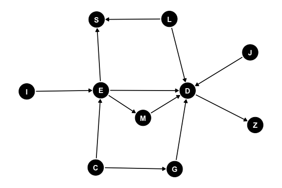
Formally, A Directed Acyclic Graph (DAG), is a graph consisting of nodes (vertices) connected by links (edges). The graph is directed if all edges go from one node to another. The directed graph is acyclic if there are no paths from a node that returns back to that node.
Directed acyclic graphs are the core component behind several foundational computer science algorithms, including:
Breadth-First Search (BFS): Explores a graph layer by layer using a Queue. Ideal for finding the shortest path on an unweighted graph and checking for bipartite graph properties.
Depth-First Search (DFS): Explores as deep as possible before backtracking using a Stack or recursion. Used heavily for cycle detection, finding connected components, and solving maze/grid problems.
Topological Sort: A linear ordering of vertices in a Directed Acyclic Graph (DAG) where for every directed edge \(u \rightarrow v\), vertex u comes before v. Commonly used for task scheduling or resolving dependencies.
Union-Find (Disjoint Set): Tracks a set of elements partitioned into a number of disjoint (non-overlapping) subsets. Primarily used to detect cycles in undirected graphs or solve connectivity problems like Kruskal’s Algorithm.
Dijkstra’s Algorithm: Uses a priority queue to find the shortest path between nodes in a weighted graph (e.g., GPS mapping).
Because a DAG is both directed and acyclic, the graph exhibits several fundamental structural elements such as visual patterns, relationships and hierarchy, and paths and traversals.
In a Directed Acyclic Graph (DAG), visual patterns represent core data dependencies, causal assumptions, or processing workflows. These shapes define exactly how nodes influence, trigger, or depend on one another. The name of the visual patterns will depend on context and usage.
Visual patterns include:
Sequential Pattern (Chain or Pipeline): \(A \rightarrow B \rightarrow C\)
Fan-Out (Fork or Scatter): \(A \leftarrow B \rightarrow C\)
Fan-In (Collider or Join or Gather): \(B \rightarrow A \leftarrow C\)
Diamond Pattern (Confounding or Fan-Out + Fan-In): (\(A \rightarrow B \rightarrow D\) and \(A \rightarrow C \rightarrow D\)).
Tree (Hierarchy): (\(B \leftarrow A \rightarrow C\), \(B \rightarrow D \rightarrow E\), \(C \rightarrow F → G\), and \(F \rightarrow H\))
The direction of edges that connect nodes gives rise to node relationships. These include:
Parent and Child: if a directed edge goes from Node \(A\) to Node \(B\) (\(A \rightarrow B\)), \(A\) is the parent of \(B\), and \(B is the child of A\).
Ancestor: any parent (or parent’s parent) node that leads to a node. In the DAG \(A \rightarrow B \rightarrow C\) the nodes \(A\) and \(B\) are ancestor nodes to node \(C\).
Descendant: any child (or child’s child) node resulting from a node. In the DAG \(A \leftarrow B \rightarrow C\) the nodes \(A\) and \(C\) are descendant nodes to node \(B\).
Source: a node with zero incoming edges (no parents). Often the starting point of a process or dataset.
Sink (or Terminal Node): A node with zero outgoing edges (no children). Usually the final output or endpoint.
The path between nodes can be determined by walking the graph. The breadth first (BFS) or depth first (DFS) search algorithm finds the shortest path between two nodes by walking the graph from a source node to a destination node. While a topological sort orders the nodes by node dependency (either forward or reverse order).
A path is a sequence of edges and nodes traversed in the direction of the arrows.
Topological Ordering (Sort) is the linear ordering of all nodes such that if there is a directed edge from \(A\) to \(B\), \(A\) appears before \(B\) in the sequence. This is essential for scheduling parallel tasks in data pipelines.
The Critical Path is the longest sequence of dependent tasks and determines the minimum time required to complete the entire DAG (or process).
Directed Acyclic Graphs (DAGs) are incredibly versatile structures. Their “types” are almost always defined by how they are used across different fields. Because of this versatility it is important to distinguish between the different types of DAG when interpreting the meaning of the arrows. Context is everything. Especially important when interpreting probabilistic and causal statistical models.
These DAGs represent variables as nodes and statistical or causal relationships as directed arrows. They are fundamental to modern AI, statistics, and epistemology. These include Bayesian Network (BN), Causal Diagram, and Hidden Markov Model (HMM).
Bayesian Network (Belief Network) is a type of Probabilistic Graphical Model (PGM) where nodes represent random variables and edges represent conditional dependencies. If an arrow points from \(A \rightarrow B\), it means the probability of \(B\) depends on the state of \(A\). Bayesian Networks are used for decision support, risk analysis, and predictive modelling under uncertainty.
Causal Diagram (Structural Causal Models) is visually identical to Bayesian networks, but with a much stricter interpretation. An arrow from \(A \rightarrow B\) explicitly states that \(A\) causes \(B\). Causal Diagrams are used to identify confounding variables, selection bias, and to calculate causal effects using frameworks like Pearl’s do-calculus.
Hidden Markov Model is a specific dynamic Bayesian network unrolled over time. It models a system assumed to be a Markov process with unobserved (“hidden”) states that generate observable outputs. the DAG consists of two intertwined layers the Hidden Layer and the Emission Layer. The Hidden Layer is a sequence of latent variables where each node depends only on its immediate predecessor, forming a “chain”. The Emission Layer is a sequence of observed variables where each observation depends solely on its corresponding hidden state at that exact same time step. Because the edges strictly progress forward through discrete time steps (\(t \rightarrow t+1\)), it forms a valid DAG structure.
In computer science, DAGs are used to represent the structural and logical flow of source code, allowing machines to optimize and execute instructions efficiently. These include Syntax DAG, Control Flow Graph (CFG), and Evaluation or Reactive Graph.
Syntax DAG is when an Abstract Syntax Tree is optimized into a DAG to allow reuse of sub-expressions (e.g., computing \(x * y\) multiple times). a DAG allows the identical operations to point to a single shared node rather than duplicating branches.
Control Flow Graph (CFG) is a representation of all paths that might be traversed through a program during its execution. While many CFGs contain loops (making them cyclic), loops are often unrolled or isolated, turning sub-sections into strict DAGs for optimization. Used in static code analysis, vulnerability scanning, and compiler optimization.
Evaluation or Reactive Graph is a DAG where nodes represent states or values, and edges represent reactive dependencies. Used in spreadsheet engines for cell recalculation, and heavily used in modern front-end web development frameworks (like React, Vue, or SolidJS) to track changes in UI state and efficiently update only the specific parts of the DOM that changed.
When dealing with data pipelines and distributed computing, DAGs model the execution order of operations, ensuring prerequisites are completed before downstream tasks begin. These include Task or Workflow DAG and Computation Graph.
Task or Workflow DAG is when nodes represent tasks or operations (e.g. Extract data, Run Python script, Generate report), and edges represent execution dependencies. The backbone of modern data engineering tools like Apache Airflow, Luigi, and Prefect.
Computation Graph is a fine-grained mathematical DAG where nodes are operations (addition, matrix multiplication) or variables. The core architecture behind deep learning frameworks like TensorFlow and PyTorch. They track operations during the forward pass so they can calculate gradients via back-propagation during the backward pass.
DAGs excel at tracking history, state changes, and synchronization without relying on a central authority. Content-Addressable DAG (Merkle DAG) is a DAG where every node has a unique cryptographic hash based on its contents and the hashes of its child nodes. Git uses a Merkle DAG to track commits, branches, and merges. IPFS (InterPlanetary File System) and various blockchain/distributed ledger technologies (like Hedera Hashgraph or IOTA) use them to achieve consensus and verify data integrity without loops.
These DAGs represent physical or logical topologies where the primary objective is to move a metric (data, materials, or assets) from an origin to a destination. They include Destination-Oriented DAG (DODAG) and Network Flow or Material Routing Graph.
Destination-Oriented DAG (DODAG) is a specialized routing tree where all paths point upward toward a single root node (the destination/sink). Primarily used in wireless sensor networks and Internet of Things (IoT) routing protocols (like RPL). They allow decentralized, low-power devices to dynamically choose the optimal parent node to route data packets home, automatically adapting if nodes drop offline. They are focused on logical pathing & connectivity (deciding the best single path for a packet).
Network Flow or Material Routing graph is a DAG where nodes act as sources (origins), trans-shipment points (stockpiles/hubs), or sinks (processing plants), and directed edges represent routes with strict physical capacity limits. They are heavily utilized in supply chain logistics, water/power distribution, and mining operations (e.g., routing ore from multiple pits to ROM stockpiles, and blending them into the process plant). Unlike data packets which choose a single path, physical materials are split, combined, and distributed across multiple paths simultaneously. They must obey the Conservation of Flow law where the volume of material entering any intermediate node must exactly equal the volume leaving it. They are focused on capacity optimization and resource allocation (using Linear Programming to maximize throughput or hit blending targets while minimizing haulage costs).
Precedence and scheduling graph is a DAG where nodes are tasks or milestones and edges represent chronological dependencies and resource constraints. Used in project management (CPM/PERT), industrial manufacturing (job-shop scheduling), and instruction scheduling inside CPU hardware to execute assembly lines efficiently.
While most applications explicitly construct a DAG as a static data structure in memory (using nodes and edge pointers), a DAG can also exist implicitly as a dynamic runtime architecture. This paradigm is known as Dataflow Architecture or Communicating Sequential Processes (CSP).
Instead of writing a graph class to execute tasks sequentially, the program structure itself becomes the graph, executing operations the exact microsecond their data dependencies are met.
A premier real-world implementation of this is found in the Go (Golang) programming language. Go replaces traditional explicit graph traversal with two simple primitives: Goroutines and Channels. Goroutines are the nodes that are independent, concurrent execution units that perform specific tasks. The Channels are the edges which are directional, typed communication pipelines that route data between goroutines.
Because channels are strictly directional, they inherently enforce a directed flow of information. If a system avoids circular deadlocks, the running program is structurally a living, breathing DAG.
This virtual model allows complex sequencing, scheduling, and information routing to be mapped directly to classic DAG visual patterns without needing to explicitly code the graph logic.
For chains (pipelines) tasks execute in strict chronological sequence (\(A \rightarrow B \rightarrow C\)). Node \(B\) is automatically blocked by the runtime until Node \(A\) pushes data into the channel.
A fan-out is a single coordinator node which distributes incoming data streams to multiple worker nodes running concurrently to parallelize heavy workloads.
A fan-in is where multiple independent worker nodes multiplex their outputs back into a single channel for a downstream aggregator node.
The primary advantage of a virtual DAG over an explicit one is how it handles complex scheduling constraints such as rate limiting or capacity bottlenecks implicitly. By using buffered channels, the capacity of the edge itself regulates the speed of the entire network (a concept known as backpressure). If a downstream processing node has a buffer limit of 3, the upstream node will automatically pause execution the moment the buffer fills up. The developer does not need to write complex queue-management code or manual sleep statements. The topology of the DAG naturally regulates the system’s velocity and processing. Making the programming language Go a perfect fit for solving complex mining problems.
In statistics and data science a primary use case for a DAG is to map out the relationships between variables in a data set. When interpreting the DAG it is important to keep in mind the distinction between a statistical DAG and a causal DAG. Confusing the two can cause tension in a team based project, lead to cognitive bias, and result in a failed project.
Statistical DAGs are concerned with representing joint probability distributions, conditional independence, and predictive association. They ask: “What does knowing \(X\) tell me about \(Y\)?”. Causal DAGs are concerned with causation. They ask: “What happens to \(Y\) if I actively change \(X\)?” or “What would have happened if…?”.
Machine learning allows us to find a statistical DAG that explains the data. It cannot distinguish between \(X \rightarrow Y\) from \(X \leftarrow Y\) or know if there is a third variable that explains the relationship (\(X \leftarrow Z \rightarrow Y\)).
To go from a statistical DAG to a causal DAG we must layer on domain expertise to define the direction of the arrows (resolving \(X \rightarrow Y\) versus \(X \leftarrow Y\) or adding a confounder \(X \leftarrow C \rightarrow Y\)) and introduce the mathematics of intervention (like Pearl’s do-calculus) to predict what happens when we actively disrupt the system.
There are variations in terminology when explaining a DAG as a statistical DAG or a causal DAG.
The statistical DAG has the same structural patterns as a general DAG but these patterns have specific statistical meaning.
A node type can be either a confounder, mediator, or collider given the junction pattern the node forms with other nodes.
A mediator node modifies the effect of other causes on an outcome (as opposed to simply affecting the outcome). For example, in the DAG \(X \rightarrow B \rightarrow Y\), \(B\) is a mediator, because it modifies the effect of \(X\) on \(Y\) (the outcome). Mining and geology example: \(Al2O3\%(Alumina\ Content) \rightarrow Clay\ Mineral\ Abundance \rightarrow Slurry\ Viscosity\). High alumina indicates the presence of clay minerals, and a high abundance of clay minerals directly causes high slurry viscosity in the processing plant. Clay is the mediator. If you only look at alumina and viscosity, they correlate. However, if you group the data so you are only looking at samples with the exact same clay abundance, changing the remaining background alumina no longer impacts viscosity.
A confounder node affects multiple outcomes, creating a positive correlation among them. In the DAG \(Y \leftarrow C \rightarrow E \rightarrow Y\), the node \(C\) is a confounder that is modifying the correlation between the nodes \(E\) and \(Y\) which both affect the outcome of \(Y\). Mining and geology example: \(Fe\%(Iron\ Grade) \leftarrow Lithology \rightarrow Bulk\ Density\). Lithology dictates both the chemistry and the density. Ignoring Lithology creates a false negative correlation between Iron and Density (a phenomenon that can lead to the Simpsons paradox).
A collider occurs when two independent variables both happen to cause or influence a single shared outcome variable. In the DAG \(X \rightarrow Z \leftarrow Y\), \(Z\) is the collider node. The arrows “collide” head-to-head at \(Z\). Because the paths smash into each other, the path is naturally blocked. \(X\) and \(Y\) are completely independent and share no statistical correlation. WARNING. Unlike mediators and confounders, if you control for a collider \(Z\), you mistakenly open the path. This creates a fake, artificial correlation between \(X\) and \(Y\) that does not exist in reality (a phenomenon known as selection bias or Berkson’s paradox). Mining and geology example: \(High\ Gold\ Grade \rightarrow Metallurgical\ Testing \leftarrow High\ Copper\ Grade\). Suppose a mining company only selects drill core samples for expensive metallurgical testing if they are highly mineralized in either Gold or Copper. In the actual deposit, Gold and Copper concentrations are completely unrelated. However, if a geostatistician evaluates only the dataset of tested samples (implicitly controlling for the collider), they will find a false negative correlation. If a tested sample has low Gold, it must have high Copper to have been selected. You have accidentally manufactured a fake relationship by filtering on a collider.
In a statistical DAG, we treat the edges as conduits through which statistical association flows. To determine if we can infer a true causal relationship between an input (such as a blast strategy) and an output (such as mill throughput), we must evaluate whether the pathways between them are open or closed.
A path is open if statistical information can freely flow between two nodes. If a path is open, the two variables will appear correlated in your database, regardless of whether one directly causes the other.
A path is blocked or closed when the flow of association is stopped. If all paths between two variables are closed, they are conditionally independent—meaning knowing the value of one tells you nothing new about the other.
As established by Judea Pearl’s framework, the structural patterns chains, forks, and colliders act as the fundamental valves that open and close these pathways. A fork (confounder) naturally opens a path, creating a spurious correlation. An inverted fork (collider) is naturally closed, but the moment you filter or condition on that convergent node, you accidentally open the path and manufacture an illusion (Berkson’s Paradox).
d-separation is the algorithmic criterion used to determine if a set of variables is conditionally independent of another set based strictly on the graph’s geometry. If a set of nodes \(Z\) blocks every valid path between variable \(X\) and variable \(Y\), then \(X\) and \(Y\) are said to be d-separated by \(Z\).
When dealing with a massive deposit database containing hundreds of structural, spatial, and chemical fields, a machine learning model can easily become overwhelmed by redundant data. The Markov blanket of a target variable X defines the minimum boundary of optimal information within the DAG.
A node’s Markov blanket consists of:
Mathematically, if you completely know the values of every variable inside a node’s Markov blanket, the rest of the entire network becomes d-separated from that node. The remaining database contains absolutely zero additional information. For a predictive model, the Markov blanket isolates the exact features required for maximum predictive accuracy, stripping away downstream noise.
Berkson’s paradox occurs when a spurious negative association appears between two independent variables because we have conditioned on a common effect (a collider).
Given the DAG \(X \rightarrow S \leftarrow Y\), Berkson’s paradox is the classic graphical definition of conditioning on a collider \(S\). \(X\) and \(Y\) are marginally independent (\(X⊥Y\)), meaning if you look at the whole population, knowing \(X\) tells you nothing about \(Y\). However, once you condition on the collider \(S\) (the selection node, e.g., looking only at hospitalized patients, or people on a dating app), the path becomes open. A statistical correlation is artificially created (\(X⊥Y∣S\)). Example: Let \(X=Good\ Looks\) and \(Y=Nice\ Personality\). In the general population, these are independent. However, if you only date people who are either good-looking OR nice (conditioning on selection \(S=1\)), you will find a strong negative correlation. The attractive people you date will seem mean, and the nice people will seem less attractive. This is purely a statistical sampling artifact.
Simpson’s paradox occurs when a statistical trend appears in different groups of data but disappears or reverses when these groups are combined. In a statistical DAG, Simpson’s paradox is a demonstration of how conditioning on a third variable \(Z\) changes the apparent association between \(X\) and \(Y\). It happens when the conditional association \(P(Y∣X,Z)\) has a different sign (positive versus negative) than the marginal association \(P(Y∣X)\). Graphically, this can happen in two statistical structures: Confounding \(X \leftarrow Z \rightarrow Y\) (where \(Z\) is a common cause) and Mediation \(X \rightarrow Z \rightarrow Y\) (where \(Z\) is a mediator, combined with a direct effect \(X \rightarrow Y\) of the opposite sign). Without causal context, the statistical DAG merely tells us “The correlation reverses when you split the data by \(Z\).” It cannot tell you which of the two statistical views (split or combined) represents reality.
As with the statistical DAG, the causal DAG has the same structural patterns as a general DAG and extends the concepts of the statistical DAG but with causal implications.
Nodes in the DAG are often classified by the mechanistic, structural, or functional roles they play in a causal system. Because we are modelling interventions and unobserved realities, causal DAGs introduce several highly specialized node types. In statistical DAGs, we usually only graph what we can measure.
An instrumental variable (\(Z\)) is a specialized node used to bypass unobserved confounding between a treatment (\(X\)) and an outcome (\(Y\)). An instrument is a variable that is causally upstream of the treatment but has no direct connection to the outcome or the confounders. \(Z\) must causally affect \(X\) (\(Z \rightarrow X\)). \(Z\) must affect \(Y\) only through its effect on \(X\) (there is no direct arrow \(Z \rightarrow Y\)). There are no shared causes between \(Z\) and \(Y\). Instrumental variables (IV) allow causal factors to be quantified without data on confounders. For example, given the model \(Z \rightarrow X \rightarrow Y \leftarrow U \rightarrow X\), \(Z\) is an instrumental variable because it directly affects \(X\), has a path to \(Y\) (outcome) and has no path to the confounder \(U\).
A latent / unnobserved confounder (\(U\)) is an unmeasured variable that causally influences two or more observed variables. Typically drawn as a dashed circle, a dashed node, or connected to other nodes via a double-headed dashed arrow \(X⇠⇢Y\). Its presence determines whether a causal effect is “identifiable” (capable of being calculated from the observed data alone). In causal DAGs, representing what we cannot measure is absolutely vital.
A proxy variable (\(W\) or \(Z\)) is an observed variable that is causally downstream of, or upstream of, an unobserved confounder. It acts as a stand-in or surrogate. If \(U\) is an unobserved confounder of \(X \rightarrow Y\), a proxy node \(W\) might be generated by \(U \rightarrow W\). While conditioning on the proxy W does not completely block the bias (and can sometimes introduce bias), modern causal techniques (like proximal causal learning) use pairs of proxies to fully recover the causal effect. When a critical confounder (\(U\)) is unobserved, we often cannot estimate a causal effect directly. However, we can sometimes measure a “proxy.”
A selection node (\(S\)) is a specialized binary node (\(S∈{0,1}\)) used to model selection bias or generalizability/transportability. \(S\) represents whether a unit is included in our dataset (S=1) or excluded (S=0). If we are analyzing data where sample selection is dependent on our variables (for example, a clinical trial where sick patients drop out), we draw arrows from those variables to \(S\) (e.g., \(Y \rightarrow S\)). To get an unbiased causal estimate, we must condition on \(S=1\) (since we only have data for those who were selected). If \(S\) is a collider, conditioning on it accidentally opens a backdoor path, causing selection bias.
An intervention / force node (\(F_X\) or “Do” node) in Judea Pearl’s structural causal framework, the act of intervening is sometimes represented as a physical node in the graph. Also called a “mechanism-change” or “regime” node, \(F_X\) represents an external force that determines the state of \(X\). When \(F_X\) is inactive (idle), \(X\) is determined by its natural causes. When \(F_X\) is active (intervening to set \(X=x\)), it physically wipes out all incoming arrows to \(X\), representing the mathematical transition from \(P(Y∣X)\) to \(P(Y∣do(X))\).
A bad control / “M-Bias” node is a specific type of collider. Imagine two unobserved confounders, \(U_1\) and \(U_2\), \(U_1\) causes \(X\) and \(M\), and \(U_2\) causes \(Y\) and \(M\). This forms an “M” shape: \(X \leftarrow U_1 \rightarrow M \leftarrow U_2 \rightarrow Y\). even though \(X\) and \(Y\) have no actual confounding between them, controlling for the node \(M\) (a collider) opens a path between \(U_1\) and \(U_2\), creating a spurious association between \(X\) and \(Y\). In causal inference, adding more variables to a regression is not always better. Causal DAGs help us identify “bad controls”—nodes that look like confounders but actually introduce bias if conditioned on.
A treatment (often called exposure) is the variable representing a hypothetical intervention.
In causal DAGS \(A \rightarrow B\) the link from \(A\) to \(B\) means that \(A\) has a direct effect on \(B\). It is a direct cause. While for the causal DAG \(A \rightarrow C \rightarrow B\), node \(A\) has an indirect effect on \(B\). \(A\) causes \(C\), and then \(C\) causes \(B\) which means that \(A\) influences \(B\) through \(C\). Because of this indirect effect \(A\) can stand in for \(C\) if \(C\) does not exist. Think about it like this: \(Exercise \rightarrow Fitness \rightarrow Health\). Exercise makes you fitter, and being fit makes you healthier. Exercise has an indirect effect on health through fitness.
The Total Effect of a variable is simply the mathematical sum of its direct and indirect effects: \(Total\ Effect=Direct\ Effect+Indirect\ Effect\)
The pinnacle of data-driven modelling is the ability to run counterfactual analysis. In pure statistics, a counterfactual asks a retrospective, causal question: “What would have happened if we had taken a different action in the past?”.
In an operational machine learning environment, such as predictive geometallurgy, we can strip away the philosophical causality and treat counterfactuals as a powerful form of constrained optimization across a computational DAG. Instead of asking about the past, we use the joint conditional probabilities of a Bayesian Network to ask a forward-looking engineering question “Given the current geological constraints, what changes to the input variables (\(X\)) are needed to force a specific target metallurgical outcome (\(Y\))?”.
For a geologist or geometallurgist, this is the foundation of automated ore control and stockpile blending.
Imagine you are mining a complex porphyry deposit. You have three active pit areas available for extraction today, each with different grades of Copper (Cu), Iron (Fe), Sulfur (S), and varying hardness. Your target outcome (Y) is to optimize the SAG mill throughput while preventing the flotation concentrates from exceeding a penalty threshold of Arsenic (As).
By running an ML counterfactual query on your trained Bayesian Network, you can input your fixed constraints:
The computational DAG evaluates the correlations and outputs the precise blending recipe: “To achieve this outcome, you must blend 40% from area 1, 10% from area 2, and 50% from area 3.”
The use of ML counterfactual in this way does not imply proving physical causality. The Bayesian Network is not claiming that physically mixing the rocks magically alters the rock. Instead, it is acting as a multi-dimensional router. It searches the historical data space to find the exact operational regime where those specific parameters safely coincided with high throughput in the past.
In an ideal world, every node in our statistical/causal DAG would be perfectly measured. But in mining, we rarely measure every variable and have observations for the true causes. Instead, we are forced to navigate around latent (hidden) variables using proxies and instrumental variables.
We cannot directly measure historical hydrothermal temperatures and pressures, fluid volumes, or complex mineral proportions. We may not have access to logged lithology or oxidation. Instead, we use elemental assays (Cu, Fe, S) as proxies for the unobserved features.
A valid proxy must be caused by (or heavily correlated with) the unmeasured true confounder. By conditioning on this proxy in the statistical model (e.g. using regression), you can adjust for and partially control the unobserved variable.
In a statistical DAG, a proxy is a downstream child of an unobserved latent variable. While the proxy allows us to predict operational outcomes (because it carries the shared variance of the hidden parent), interpreting a proxy model as a direct causal link is a hazard. If you treat the proxy as the true cause, your model’s parameters will warp the moment the hidden variable shifts.
In traditional data science or multiple linear regression, engineers often throw every available variable into a model simultaneously to predict an outcome (\(Y ∼ X + M\)).
If you run a regression of \(Power ∼ Hardness + Throughput\), the regression coefficient for \(Hardness\) will only capture the Direct Effect. By including \(Throughput\) in the model, you have mathematically “blocked” or controlled for the mediator (\(Throughput\)), completely erasing the indirect effect from your parameters. For a mining engineer trying to optimize a budget, this creates a dangerous blind spot. The model might tell you the coefficient for hardness is low (small direct effect). You might conclude that harder ore won’t impact your power bill very much. In reality, the harder ore will severely drive up costs because it forces a massive reduction in throughput (huge indirect effect), extending the operational hours needed to process the ore. By mapping these pathways explicitly in a statistical DAG, you can calculate both effects independently, ensuring your engineering modifications optimize the whole system rather than just a single isolated arrow.
What happens when you know a massive confounder exists between your operational input and plant output, but you cannot measure it? For example, consider trying to determine the true causal impact of a flotation reagent (\(X\)) on metal recovery (\(Y\)), knowing that unlogged ore hardness (\(U\)) acts as a hidden confounder affecting both.
digraph InstrumentalVariable {
rankdir=LR;
node [shape=box, style=filled, fillcolor=lightblue];
Z [label="Pump Feed Rate\n(Instrumental Variable)", fillcolor=lightgreen];
X [label="Flotation Reagent\n(Treatment)"];
Y [label="Metal Recovery\n(Outcome)"];
U [label="Unlogged Ore Hardness\n(Hidden Confounder)", style=dashed, fillcolor=lightgray];
Z -> X;
X -> Y;
U -> X;
U -> Y;
}To solve this without measuring the hidden confounder (\(U\)), we search the DAG for an Instrumental variable (\(Z\)).
An instrument is a variable that satisfies three strict structural rules:
In a plant setting, the automatic Pump Feed Rate (\(Z\)) might act as an instrument. It forces a change in how much reagent (\(X\)) is added due to automated scaling logic, but it has no relationship with the natural, raw hardness (\(U\)) of the rock fed into the process plant. By tracking how fluctuations in the pump rate ripple through to final recovery, we can mathematically bypass the unmeasured geological confounder and calculate the clean, uncorrupted causal effect of the reagent alone. This is the power of the statistical DAG. It allows us to calculate invisible truths using the structure of the data we can see.
There are a vast array of packages available in R for doing all kinds of data analytics and statistical analysis. Some of those use the DAG as either a fundamental data structure hidden inside the package or provide the user access to the DAG for constructing, learning, or visualizing.
To visualize DAGs, the R packages dagitty (Textor et al. 2016) (create a DAG using DOT notation), ggplot2 (Wickham 2016) (grammar of graphics), ggdag (Barrett 2023) (visualization of directed acyclic graphs), ggthemes (Arnold 2021) (visualization plot themes) are used.
A custom helper function plot_dag is used to wrap the plotting of a DAG for convenience to reduce repeated use of boilerplate code.
plot_dag <- function(dag, labs=NULL, layout="auto") {
g <- tidy_dagitty(dag, layout=layout, seed=1)
if(is.null(labs)) {
g <- ggplot(g, aes(x=x, y=y, xend=xend, yend=yend)) +
geom_dag_edges_link(aes(start_cap=ggraph::circle(5,"mm"),
end_cap=ggraph::circle(5,"mm"))) +
geom_dag_point(size=11) +
geom_dag_text(size=4) +
theme_dag()
} else {
g <- dplyr::mutate(g, lab = labs[name]) |>
ggplot(aes(x=x, y=y, xend=xend, yend=yend)) +
geom_dag_edges_link(aes(start_cap=ggraph::circle(5,"mm"),
end_cap=ggraph::circle(5,"mm"))) +
geom_dag_point(size=11) +
geom_dag_text(aes(label=lab), size=4) +
theme_dag()
}
return(g)
}
This list of R packages is not exhaustive.
These packages expose the DAG itself as a first‑class object.
dagitty — structural causal models and adjustment setssimDAG — simulation from a DAG Allows explicit construction of DAGs and simulates data from them. Nodes can be defined with distributions or regression models; supports discrete‑time and discrete‑event simulation. Provides conversion to dagitty, igraph, and tidy DAG formats.
causact — business‑friendly Bayesian DAG modelling Defines probabilistic graphical models using DAGs as the modelling interface. DAGs are used to specify Bayesian models that are then executed via NumPyro. Includes interactive DAG visualization and model building.
These build statistical models whose structure is a DAG or related graph, even if the DAG is not always exposed directly.
bnlearn - widely used for learning Bayesian network structures from data (DAG learning), parameter estimation, and inference. The DAG is central: structure learning algorithms output DAGs; inference uses DAG factorization.
tidygraph and igraph - general graph manipulation packages used to build computational graphs, dependency graphs, and workflow DAGs. igraph is also used internally by many DAG packages (dagitty, simDAG).
gRbase, gRain, gRim - core infrastructure for probabilistic graphical models (Bayesian networks, Markov networks). They represent conditional independence structures using graphs and provide inference, propagation, and model fitting.
sbm - uses stochastic block models, representing network structure via graphs. Not DAG‑specific but part of the graphical‑model ecosystem.
The following R packages use DAGs internally to orchestrate computation, not for causal inference. While targets rules workflow orchestration, different packages approach computational graphs from distinct angles (e.g. structural causal models, deep learning, or alternative syntax).
Using DAGs in data pipelines instead of linear, step-by-step scripts offers massive engineering advantages:
Parallel execution: By looking at a DAG, an execution engine can immediately identify which tasks do not depend on each other. If Node A and Node C are independent, the system can run them simultaneously on different CPU cores or servers.
Caching and reusability: If a pipeline fails at Node D, the system doesn’t need to restart from Node A. It knows the outputs of Nodes A, B, and C are already computed and safe, allowing it to resume exactly where it failed.
Causal lineage: In data science and analytics, a DAG provides a clear “paper trail” of how a specific data point was calculated, making debugging and auditing incredibly straightforward.
targets - modern pipeline toolkit for reproducible data science. The entire workflow is a DAG. Each target is a node and edges represent dependency relationships. The DAG determines execution order, caching, and parallelization. In targets, your entire data science workflow—from importing data and data cleaning to model fitting and report generation—is defined as a Directed Acyclic Graph (DAG). Nodes are “Targets”: Each step in your pipeline is defined using the tar_target() function. A target represents a specific R object (a dataset, a plot, a model fit). Edges are Code Dependencies: targets performs static code analysis. It scans your code before running it, looking at which functions and variables are called inside each target. If target B references target A, targets automatically draws a directed edge from \(A \rightarrow B\). The Power of “Skipping” (Memoization). The primary benefit of targets is its ability to track the state of your graph. It computes a cryptographic hash of the code and the data for each node. When you run tar_make(), it checks if anything has changed. If Node A and Node B haven’t changed, targets skips executing them and loads their cached results from disk, only running Node C which depends on a changed parameter.
dagitty and ggdag - if your goal is Structural Causal Modelling (SCM) rather than task execution, dagitty is the premier tool. It evaluates graphs to find confounding paths, instrumental variables, and adjustment sets for statistical modelling. The R package ggdag builds on top of it to easily plot these graphs using ggplot2.
simDAG - used to simulate complex data based on a predefined DAG. You define the nodes as distributions or functions dependent on other nodes, and the package handles generating data sequentially according to the valid topological ordering of the graph.
drake - was the precursor to targets. It pioneered graph-based pipelines in R but is now officially superseded by targets, which handles memory and parallel processing more efficiently. The package allows building a DAG of data‑science steps and executes only what is needed based on dependency graph. Central to reproducible pipelines.
torch - for mathematical computation graphs, torch brings PyTorch’s autograd engine to R. It builds dynamic computational graphs behind the scenes to track tensor operations and calculate gradients automatically during backpropagation.
mlr3 - modern object-oriented machine learning framework in R. Machine‑learning workflows are represented as graphs (pipelines, learners, preprocessors). DAGs define the flow of data through transformations and models.
Packages that visualize DAGs or general graphs.
ggdag - a tidyverse‑style interface for visualizing DAGs, often used with dagitty. Provides geom layers for nodes, edges, adjustment sets, and d‑separation visualization.
DiagrammeR - builds and visualizes graph structures including DAGs. Used by causact for DAG rendering. Supports node/edge creation, layout algorithms, and export.
diagram - visualizes simple graphs, flow diagrams, and network structures. Useful for DAG‑style schematic diagrams.
Packages that provide graph data structures used by DAG‑focused packages.
graph - implements basic graph handling capabilities; used by many higher‑level graphical‑model packages.
gRbase - provides graph representations and utilities for graphical models, including DAGs. Forms the foundation for other PGM packages.
Instead of manually drawing nodes and positioning arrows in a graphic design tool, we can define the graph using a text based language that list the nodes and defines the relationships (edges) between them. Software then reads the notation and generates a visual representation of the graph using layout algorithms to automatically arrange the nodes, prevent overlapping, and draw clean, readable diagrams.
The graph notation allows us to also use the text description to build the graph and then use it for various purposes.
When using Quarto and R for data analysis we have several different styles of graph notation that we can. It depends on what R package we want to use. Most of the R packages that use graphs, such as simDAG and bnlearn, the primary notation is the R formula. The R package bnlearn also has its own style of notation, the Model String, that allows building a graph from a compact string representation while the R packages dagitty and ggdag use the R formula notation and a notation similar to the Graphviz DOT notation. For pure visualisation of graphs we can use the Graphviz DOT notation.
The DOT language is a plain-text script language used to describe graphs (including DAGs) in a way that both humans and computers can easily read. It is the standard syntax used by Graphviz, an open-source graph visualization software.
An example DAG defined using DOT notation is shown in Listing 2.
Graphviz DOT notation is directly supported in Quarto as {dot} code blocks. Note that removing the braces ({}) makes the code block non-executable in Quarto.
digraph MiningWorkflow {
// Global graph attributes for clean layout
rankdir=LR; // Lays out the graph from Left to Right instead of Top to Bottom
node [shape=box, style=filled, fillcolor=lightblue]; // Default styling for nodes
// Define the sequence/dependencies
Drill_Assays -> Block_Model;
Geotech_Data -> Pit_Design;
Block_Model -> Pit_Design;
Pit_Design -> Mine_Scheduling;
Mine_Scheduling -> Ore_Extraction;
// Customizing specific nodes for clarity
Ore_Extraction -> Crushing_Plant [label="Run of Mine"];
Crushing_Plant -> Flotation_Cells;
Flotation_Cells -> Concentrate_Output [color=gold, penwidth=2];
// Highlight the final output node
Concentrate_Output [shape=ellipse, fillcolor=gold];
}The R package dagitty uses a notation similar to DOT but with some restrictions. The graph must be defined using dag{} and contain no comments or visual elements. An example DAG defined using dagitty variation of DOT notation is shown in Listing 3.
The R formula is a first class object in the R programming language and is used extensive in R. A formula uses the symbol ~ instead of =. For defining a graph in the R package dagitty you can use y ~ x for a directed edge from \(x\) to \(y\) (\(x \rightarrow y\)) or you can use y ~~ x for bidirected relationships.
An example DAG defined using the R formula notation in dagitty is shown in Listing 4.
In the R package bnlearn, network structures are represented via a compact string format known as a model string. This syntax is primarily used in the model2network() and modelstring() functions to define or extract Directed Acyclic Graphs (DAGs).
The model string syntax is straightforward, where every node and its local relationships are enclosed in square brackets []. Independent node labels are placed inside square brackets (“[A]”). Parents are listed after a vertical bar | and separated by colons : within the child’s node block (“[B|A]” where node A is the parent of B). To define multiple parents, each parent is separated by a colon (“[B|A:C]” where node B has parents A and C).
An example DAG defined using the bnlearn model string format is shown in Listing 5.
A simple example DAG is shown in Figure 2. When interpreting the DAG it is extremely important to know what context and type of DAG it represents. If the DAG is a statistical DAG for a probabilistic graphical model then interpreting the edge directions as causality is false when the direction simply implies correlation.
If the DAG represents a computational graph then the topological sort (\(I\), \(C\), \(L\), \(J\), \(E\), \(G\), \(S\), \(M\), \(D\), and \(Z\)) denotes the order of computation. Note that the topological sort is not inherently deterministic–the order may vary. The nodes \(E\), \(G\), \(S\), \(M\), \(D\), represents some computation (a function). The nodes \(I\) \(C\), \(L\), and \(J\) might represent a scalar value which might be a number, a string, or a collection of numbers and strings.
[1] "I" "C" "L" "J" "E" "G" "S" "M" "D" "Z"If the DAG is a causal DAG then the causal paths linking \(E\) and \(D\) are \(E \rightarrow M \rightarrow D\) and \(E \rightarrow D\). The non-causal paths are \(E \leftarrow C \rightarrow G \rightarrow D\) (block by controlling for C or G) and \(E \rightarrow S \leftarrow L \rightarrow D\) (blocked provided we do not control for S). The node \(C\) confounds the association of \(E\) and \(D\). The node \(G\) can be controlled to block the confounding path between \(E\) and \(D\). The node \(M\) partially mediates the effect of \(E\) on \(D\). The node \(S\) is a collider on a non-causal path between \(E\) and \(L\), and therefore a collider on a non-causal path between \(E\) and \(D\). Controlling or restricting \(S\) will create a biased association between \(E\) and \(D\). The node \(Z\) is a descendant of \(D\). The node \(I\) is an instrumental variable, such as randomization, for the effect of \(E\) on \(D\). And the node \(J\) causes \(D\) and will therefore be an effect modifier of any other cause of \(D\).
If the DAG is a statistical DAG or probabilistic graphical model then all nodes within the Markov blanket of node \(D\) (nodes \(E\), \(G\), \(J\), \(L\), \(M\), and \(Z\)) is the minimal set of features that renders all other features conditionally independent of the target variable (\(D\)). In machine learning, it isolates the most predictive, non-redundant variables, acting as an optimal filter for dimensionality reduction.
[1] "E" "G" "J" "L" "M" "Z"If the DAG is a material routing graph then the nodes might represent locations (source and sink). In a mining operation the nodes might represent pit locations, or intermediate locations, while node \(D\) might represent the ROM stockpile and \(Z\) the process plant. The edges between the nodes might represent the flow of a metric such as tonnage, ore type, material grades, material hardness, or value.
Context is everything. Assuming the context of a DAG can lead to miss-interpretation and miss-understanding.
Every DAG possesses a mathematical property called a Topological Order. Because the graph contains no loops (is acyclic), the computer can linearize the network into a strict, step-by-step assembly line. The simulation engine, whether using simDAG or a Bayesian Network framework, processes the graph from the top down:
The Root Nodes: The engine identifies variables with no incoming arrows (zero dependencies) and samples their baseline values first.
The Conditional Flow: The engine moves down the arrows, using the values generated in step one as mathematical inputs to calculate the next set of variables.
The Leaf Nodes: The engine finishes at the bottom of the graph where no further arrows exit.
[Computational Flow]
Root Node (Sample Baseline) → Intermediate Node (Calculate via Parent Input) → Leaf Node (Final Output)To understand a computational DAG further, we can look at how modern machine learning frameworks handle complex mathmatics. In software libraries like TensorFlow or PyTorch, every neural network is represented under the hood as a massive computational graph.
In a neural network DAG, nodes represent mathematical operations (like addition, matrix multiplication, or an activation function) or variables (inputs and weights). Edges represent the flow of data tensors (arrays of numbers) moving from one operation to the next. When TensorFlow executes a model, it does not assign philosophical “causation” to the nodes. It simply looks at the graph, calculates a Topological Order (a strict, non-circular sequence where every node’s prerequisites are computed first), and runs the data through the assembly line. The network learns the joint weights required to predict an output, treating the graph purely as an optimized calculation flow.
You do not need a complex neural network to interact with a computational DAG. You use one every time you open a spreadsheet. A spreadsheet is fundamentally a massive computational DAG engine. Nodes are the individual cells containing values or equations. Edges are the cell references (e.g., cell C1 contains =A1+B1, creating directed edges from \(A1 \rightarrow C1\) and \(B1 rightarrow C1\)). Internally in the spreadsheet program a DAG is used to represent the relationship between cells and which cells are dirty and require calculation and the computational order of the cells.
This exact computational DAG architecture is what allows specialized developer libraries–such as the Python package pycel or the Rust compiler engine formulazer–to take massive, unmanageable corporate spreadsheets, extract their underlying mathematical graphs, and compile them into high-performance source code.
Just like a spreadsheet program or formula engine, when you use simDAG or a bnlearn Bayesian network, you are setting up a computation engine with a specific computational order, the graph Topological Order.
To demonstrate a computational graph fundamentally, let’s build a mathematical function DAG using base R functions, and then represent its structure using igraph.
We will compute the system of structural equations representing the following graph:
First define the computational functions:
# Define individual nodes as pure functions mapping inputs to outputs
node_X <- function() {
return(5) # Base input
}
node_Y <- function(x) {
return(x^2 + 2)
}
node_Z <- function(y) {
return(sqrt(y) * 3)
}
node_W <- function(x, z) {
return(x * z)
}
# The execution wrapper acting as the DAG coordinator
execute_dag <- function() {
# Topological order enforcement: X must happen first
val_x <- node_X()
# Y needs X
val_y <- node_Y(val_x)
# Z needs Y
val_z <- node_Z(val_y)
# W needs both X and Z
val_w <- node_W(val_x, val_z)
return(list(X = val_x, Y = val_y, Z = val_z, W = val_w))
}Now run the computation:
$X
[1] 5
$Y
[1] 27
$Z
[1] 15.58846
$W
[1] 77.94229To explicitly map out the graph structure mathematically, we can pass our dependencies into igraph or use ggdag.
[1] TRUE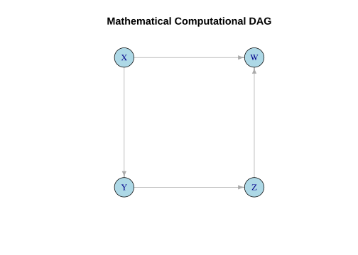
Non-linear relationships and non-Gaussian distributions can be handled in a mixture of Gaussian Bayesian Network. The DAG is defined upfront and includes a pure Gaussian random variable and one or more discrete selector nodes. The resulting model is similar to using linear approximation of complex curves. A Bayesian Network is used to fit the parameters of the DAG model.
The uniform distribution can be approximated using the DAG \(S \rightarrow X\) where \(X\) is the random variable with the approximate Uniform distribution and \(S\) is a discrete variable representing the uniform binning of the range of \(X\). Figure 3 (using Bayesian Networks) and Figure 4 (simDAG) shows the comparison between the true and approximated distribution of \(X\).
set.seed(1781)
# Generate data
k <- 6
n_samples <- 1000
x <- runif(n_samples)
s <- cut(x, breaks=0:k/k)
z <- data.frame(X=x, S=s)
# Fit Bayesian Network
dag <- "[S][X|S]"
dag <- model2network(dag)
bn <- bn.fit(dag, z, replace.unidentifiable=TRUE)
# --- Plot ---
zz <- rbn(bn, n_samples)$X
plot(ecdf(z$X), lwd=2, main="ecdf", do.points=FALSE)
plot(ecdf(zz), col="red", lwd=2, do.points=FALSE, add=TRUE)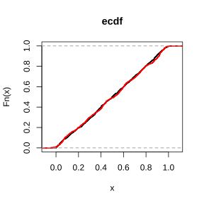
To replicate the Bayesian Network using simDAG we need to add the independent Gaussian random variable \(Z\). This variable is a parent to \(X\). Making the DAG \(S \rightarrow X \leftarrow Z\).
offsets <- as.numeric(coef(bn$X)) |>
(\(x) {names(x) <- 1:length(x); x})()
sigma <- as.numeric(sigma(bn$X)) |>
(\(x) {names(x) <- 1:length(x); x})()
node_x <- function(data, parents, betas=NULL) {
return(offsets[data$S] + sigma[data$S]*data$Z)
}
dag_replicated <- empty_dag() +
node("S", type="rcategorical", probs=coef(bn$S),
output="factor", labels=1:length(coef(bn$S))) +
node("Z", type="rnorm", mean=0, sd=1) +
node("X", type=node_x, parents=c("S","Z"))
# Simulate the Naive Measured Dataset
set.seed(1781)
n_samples <- 1000
df_replicated <- sim_from_dag(dag_replicated, n_sim=n_samples) |>
as.data.frame()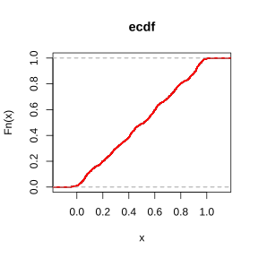
The non-linear Sigmoid (‘S’-curve) function can be approximated using the DAG \(X \leftarrow R \leftarrow S \rightarrow X\) and \(S \rightarrow Y \leftarrow X\) where \(Y\) is the value of applying \(sigmoid(X)\), \(X\) is a random Gaussian variable, \(R\) is a discrete variable representing the uniform binning of the range of \(Y\), and \(S\) is a discrete variable representing the uniform binning of the range of \(X\). Figure 5 shows the comparison between the true and approximated distribution (\(Y\)).
sigmoid <- function(x, alpha=1) {
y <- 1 / (1 + exp(-alpha * x))
return(y)
}
# Generate data
n_samples <- 1000
set.seed(1781)
x <- seq(from=-5, to=5, by=0.1)
y <- sigmoid(x)
z <- data.frame(X=c(-10, x, 10), Y=c(0, y, 1))
dag <- "[S][R|S][X|S:R][Y|X:S]"
dag <- model2network(dag)
# Fit Bayesian Network
zz <- z
zz$S <- cut(zz$X, breaks=10)
zz$R <- cut(zz$Y, breaks=10)
bn <- bn.fit(dag, zz, replace.unidentifiable=TRUE)
# --- Plot ---
x <- z
x$Y <- as.numeric(NA)
x$S <- cut(x$X, breaks=nlevels(zz$S))
x$R <- factor(NA, levels=levels(zz$R))
y <- suppressWarnings(impute(bn, x))
plot(z$X, z$Y, lwd=2, type="l", main="Sigmoid Function",
xlab="X", ylab="Y = sigmoid(X)")
lines(y$X, y$Y, type="l", col="red", lwd=2)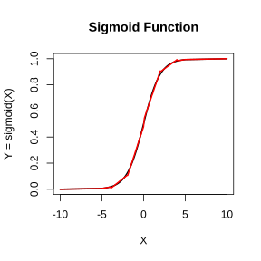
Bayesian Networks have the rule that discrete nodes cannot have continuous parents. If an edge \(A \rightarrow B\) leads from a continuous variable \(A\) to a discrete variable \(B\) then the edge needs to be reversed (\(A \leftarrow B\)) and an additional latent variables added to make the network behave as if the edge were \(A \rightarrow B\).
set.seed(1781)
# Generate data
k <- 11
n_samples <- 2000
A <- rnorm(n_samples)
B <- as.factor(ifelse(A>0.0, "b", "nb"))
s <- cut(A, breaks=k)
z <- data.frame(A=A, B=B, S=s)
# Fit Bayesian Network
dag <- "[B][S|B][A|B:S]"
dag <- model2network(dag)
bn <- bn.fit(dag, z, replace.unidentifiable=TRUE)
# --- Plot ---
y <- suppressWarnings(bnlearn::rbn(bn, n_samples))
qqnorm(y$A, main="Q-Q Plot", pch=19, cex=0.6, ylab="Sample Quantiles (A)")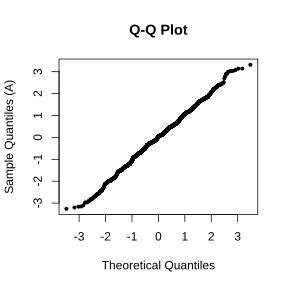
Simulating synthetic data directly from a Directed Acyclic Graph (DAG) allows us to create controlled testing environments. By explicitly defining structural equations, we can model how variables interact.
The simulated data can be compared with real data to confirm if the expected model matches reality. If it does not match then this tells us that we have miss-specified the relationships in the DAG, miss-specified the parameters of the nodes, or have missing or hidden variables. When structural dependencies are deliberately removed or omitted during data acquisition, unmeasured confounding bias is introduced. This bias distorts the observed statistical distributions of the remaining measured parameters.
The simDAG package (Denz and Timmesfeld 2026) provides an intuitive, node-by-node framework for building static or longitudinal structural equation models. It can be used to simulate data from a DAG. The DAG can contain a mix of categorical (factors) and continuous variables.
The bnlearn package (Scutari 2010) is an extensive framework for Bayesian Networks. It includes an extensive list of structural learning algorithms which can be used to learn the DAG from data. The package also includes functions to learn the Bayesian Network parameters with and without missing values.
Additional R packages used in simulating data include dplyr (Wickham et al. 2026) for data manipulation and ggplot2 and ggdag for visualisation.
The helper function rtruncnorm is used to generate a random Gaussian distribution that can be truncated at lower and upper limits. A naive truncation by only selecting values above or below a threshold alters the Gaussian distribution.
To understand the data we are analysing, first be aware that data illusions (bias) are lurking, just waiting to cause as much confusion and damage as possible. The main illusions to be aware of and conscious of when doing data analysis are Simpson’s Paradox, Berkson’s Paradox, and Survivorship Bias.
In resource modelling and geometallurgy, we rely heavily on observational data, but data rarely speaks for itself without structural context. Simpson’s Paradox and Berkson’s Paradox represent two classic, highly disruptive statistical illusions that occur when data is analysed without accounting for the underlying network of data relationships (DAG). While they look like mathematical anomalies, they are actually systemic errors rooted in the structure of Directed Acyclic Graphs (DAGs).
Simpson’s Paradox occurs when we fail to control for a confounder (a common cause), blending distinct populations and reversing true trends.
Berkson’s Paradox occurs when we accidentally control for a collider (a common effect), filtering our data down to a biased subset and manufacturing fake relationships out of thin air.
For a mining professional, failing to recognize these structural traps can lead to catastrophic errors—such as misinterpreting the physical properties of an orebody or optimizing a processing plant around a geological correlation that does not actually exist.
We should always be aware that correlation does not equal causation and be vigilant to confounders and latent variables (missing or hidden variables).
In geology, we are commonly filtering data by a selection variable and then doing some data analysis, modelling, or prediction. This is the danger zone. By filtering the data or sampling by a factor we risk selection bias. An example might be when comparing laboratory A with laboratory B as part of a quality assurance and quality control (QAQC) program. The danger lies in if, inadvertently, samples sent to lab A have specific rock properties, while samples sent to lab B have different properties. This same scenario could occur when comparing historic data with more recent data where the two data sets have been collected over different areas or under different sampling protocols. Or when performing metallurgy test-work. In these scenario we have a hidden selection variable.
Another example in geology is when we do geological interpretation of the data and construct domains. Those domains typically depend on lithology and grade bins. The domain is now a selection variable and is a collider where \(Lithology \rightarrow Domain \leftarrow Geochemistry\) or \(Bulk Density \rightarrow Domain \leftarrow Geochemistry\). Note that these selection variables are not the same as a latent discrete variable that determines rock properties such as \(Bulk Density \leftarrow U \rightarrow Geochemistry\) where \(U\) affects both the rocks bulk density and geochemistry and could be used in sample selection \(U \rightarrow S\). In this instance \(U\) could represent oretype and then we use oretype for metallurgy sampling–for this scenario it is important to sample all classes of \(U\) uniformly so we don’t bias the results and generate an unbalanced dataset.
Simpson’s Paradox is a striking phenomenon in probability and statistics where a trend or correlation appears in several different groups of data, but completely reverses or disappears when these groups are combined.
It occurs when a critical hidden factor, called a confounding variable, is ignored. This confounder influences both the assumed cause and the effect, distorting the overall relationship and leading to potentially disastrous analytical conclusions if not addressed.
A classic example of the Simpson’s paradox is illustrated in Figure 7. The plot shows the data generating DAG on the left hand side and a scatter plot of \(Y\) on \(X\) where data points are coloured by group with a set of corresponding coloured regression lines and a single black regression line representing all data combined. From the plot it is very obvious that a bias exists.
set.seed(123)
# Generate data
n <- 300
z <- sample(1:3, n, replace=TRUE)
x <- 2 * z + rnorm(n, mean=0, sd=0.5)
y <- 5 * z - 1.5 * x + rnorm(n, mean=0, sd=0.5)
simpson_data <- data.frame(X=x, Y=y, Z=as.factor(z))
# --- Plots ---
# Left: The DAG
dag_simpson <- dagify(X ~ Z, Y ~ Z, Y ~ X, exposure="X", outcome="Y") |>
tidy_dagitty() |>
ggdag(node_size=12) +
theme_dag() +
labs(title = "Simpson's Paradox DAG")
# Right: The Scatter Plot
plot_simpson <- ggplot(simpson_data, aes(x=X, y=Y)) +
geom_point(aes(color=Z), alpha=0.7) +
geom_smooth(method="lm", se=FALSE, color="black", linetype="dashed", size=1.2) +
geom_smooth(aes(color=Z), method="lm", se=FALSE, size=1) +
theme_minimal() +
labs(title="Scatter Plot: Y ~ X",
subtitle="Dashed line = Aggregate (Omitted Z)\nColored lines = Stratified by Z")Warning: Using `size` aesthetic for lines was deprecated in ggplot2 3.4.0.
ℹ Please use `linewidth` instead.`geom_smooth()` using formula = 'y ~ x'
`geom_smooth()` using formula = 'y ~ x'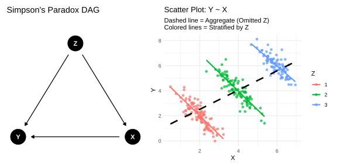
Real data tends not to be so obvious. The Simpson’s Paradox can hide when the groups overlap. The scatter plot of all data could show a strong correlation between \(X\) and \(Y\) or it might not show any correlation at all. Using the same approach as for Figure 7, but intentionally confusing the identification of the grouping, the plot in Figure 8 shows the same effect but is much harder to detect. If we didn’t measure the confounder \(Z\) we may never suspect a bias exists and naively think that the negative correlation (black dashed line) is real.
set.seed(123)
n_group <- 150
# Group 1: High Z, lower X, steep negative slope
z1 <- data.frame(
X = rnorm(n_group, mean=2, sd=0.8),
Z = "Group 1"
) |> mutate(Y = 3 + 4.5 * X + rnorm(n_group, sd=4.8))
# Group 2: Medium Z, medium X, flat/slight positive slope
z2 <- data.frame(
X = rnorm(n_group, mean=4, sd=0.8),
Z = "Group 2"
) |> mutate(Y = 5 + 0.2 * X + rnorm(n_group, sd=4.8))
# Group 3: Low Z, higher X, moderate positive slope
z3 <- data.frame(
X=rnorm(n_group, mean=6, sd=0.8),
Z="Group 3"
) |> mutate(Y = 0.2 + 0.8 * X + rnorm(n_group, sd=0.8))
# Combine into a single dataset
simpson_subtle <- rbind(z1, z2, z3)
# --- Plots ---
# Left: The DAG
dag_simpson <- dagify(X ~ Z, Y ~ Z, Y ~ X, exposure="X", outcome="Y") |>
tidy_dagitty() |>
ggdag(node_size=12) +
theme_dag() +
labs(title="Simpson's Paradox DAG")
# Right: The Scatter plot
plot_simpson <- ggplot(simpson_subtle, aes(x=X, y=Y)) +
geom_point(aes(color=Z), alpha=0.4) +
scale_color_brewer(palette="Set1") +
geom_smooth(method="lm", se=FALSE, color="black", linetype="dashed", size=1.2) +
geom_smooth(aes(color=Z), method="lm", se=FALSE, size=1) +
theme_minimal() +
labs(
title="Subtle Simpson's Paradox (Overlapping Groups)",
subtitle="Dashed line = Combined Positive Trend\nColored lines = True Group Slopes",
color="Confounder (Z)"
)
# Display side-by-side
dag_simpson + plot_simpson`geom_smooth()` using formula = 'y ~ x'
`geom_smooth()` using formula = 'y ~ x'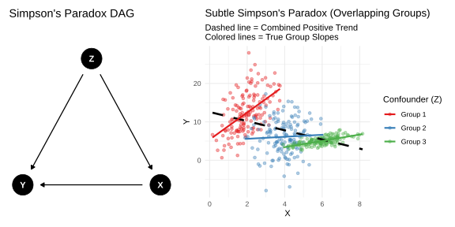
Berkson’s Paradox (also known as selection bias or admission-rate bias) is a counterintuitive phenomenon in statistics where two variables appear to have a strong negative correlation in a subset of data, even though they are completely unrelated or even positively correlated in the overall population.
While Simpson’s Paradox is caused by a hidden confounder that you forgot to control for, Berkson’s Paradox is caused by mistakenly controlling for a collider. It happens when you selectively analyse data from a sub-population that has already been filtered based on a specific criteria or outcome, inadvertently creating a statistical illusion.
The Berkson’s paradox is illustrated in Figure 9. Note the differences in the DAG compared with the Simpson’s Paradox DAG in Figure 7 and Figure 8. This time \(Z\) in the DAG is a collider and \(X\) has no direct effect on \(Y\). The scatter plot of \(Y\) on \(X\) shows all data in grey and the selected data in red. Again it is obvious that we have introduced a selection bias. This is shows the importance of doing exploratory data analysis and plotting the data to reveal data problems. The problem though is what if the selection occurred before we got the data and we where not aware of the selection. What if that non-selected data is not available and cannot be sampled.
# Generate data
n_berk <- 500
x_b <- rnorm(n_berk, mean=0, sd=1)
y_b <- rnorm(n_berk, mean=0, sd=1)
# Z is the collider (if X + Y > 0.5)
z_score <- x_b + y_b + rnorm(n_berk, sd=0.1)
selected <- ifelse(z_score > 0.5, "Selected", "Not Selected")
berkson_data <- data.frame(X=x_b, Y=y_b, Status=as.factor(selected))
# --- Plots ---
# Left: The DAG
dag_berkson <- dagify(Z ~ X, Z ~ Y, exposure="X", outcome="Y") |>
tidy_dagitty() |>
ggdag(node_size=12) +
theme_dag() +
labs(title="Berkson's Paradox DAG")
# Right: The Scatter Plot
plot_berkson <- ggplot(berkson_data, aes(x=X, y=Y)) +
geom_point(aes(color=Status), alpha=0.6) +
scale_color_manual(values = c("Not Selected" = "grey70", "Selected" = "red")) +
geom_smooth(method="lm", se=FALSE, color="black", linetype="dashed", size=1.2) +
geom_smooth(data=filter(berkson_data, Status == "Selected"),
method="lm", se=FALSE, color="red", size=1.2) +
theme_minimal() +
labs(title="Scatter Plot: Y ~ X",
subtitle="Dashed line = All Data\nRed line = Selected Data Only (Z = 1)")
# Display side-by-side
dag_berkson + plot_berkson`geom_smooth()` using formula = 'y ~ x'
`geom_smooth()` using formula = 'y ~ x'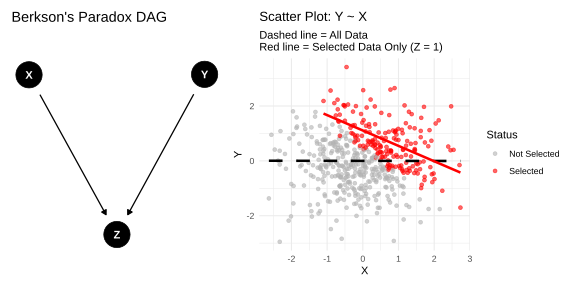
Survivorship bias is a form of selection bias where a dataset has already been filtered by a selection process (survival or success). It occurs when the failures (non-survivors) are excluded from the data and ignored. It creates a dangerously skewed perception of reality and leads to overestimate the odds of success.
The bias is similar to the Berkson’s Paradox. They are both a collider bias or selection bias. The bias differs in the selection mechanics and missing data. The selection mechanism in Berkson’s Paradox is static into a specific environment or database while Survivorship Bias is dynamic filtering over time where failures/losses physically exit the pool of observation. The missing data in Survivorship Bias is irretrievable while the missing data in Berkson’s Paradox are available and could be selected.
Survivorship Bias is illustrated in Figure 10. The scatter plot of \(Y\) on \(X\) shows all data in grey and the selected data in red. Again it is obvious that we have introduced a selection bias if we had the data for failures (which we don’t).
set.seed(123)
n_planes <- 1000
# Generate Independent Hits (Fuselage and Engine are completely uncorrelated)
fuselage_hits <- rtruncnorm(n_planes, mean=5, sd=1.5, a=0)
engine_hits <- rtruncnorm(n_planes, mean=5, sd=1.5, a=0)
# Define Survival (S)
# The engine is critical; if engine hits are high, the plane crashes.
# The fuselage is sturdy; fuselage hits barely affect survival.
survival_threshold <- 7.5
survived <- ifelse(engine_hits + (0.5 * fuselage_hits) < survival_threshold, "Returned to Base", "Shot Down")
plane_data <- data.frame(
Fuselage_Hits=fuselage_hits,
Engine_Hits=engine_hits,
Status=as.factor(survived)
)
# --- Plots ---
# Left: The DAG (S acts as a collider)
coords <- list(
x = c(X=1, Y=3, S=2),
y = c(X=2, Y=2, S=1)
)
dag_surv <- dagify(
S ~ X,
S ~ Y,
exposure="X",
outcome="Y",
coords=coords
) |>
tidy_dagitty() |>
ggdag(node_size=12) +
theme_dag() +
scale_x_continuous(expand = expansion(mult = 0.2)) +
labs(
title="Survivorship Bias DAG",
subtitle="X = Fuselage Hits\nY = Engine Hits\nS = Survival (Collider)"
)
# Right: The Scatter Plot
plot_surv <- ggplot(plane_data, aes(x=Fuselage_Hits, y=Engine_Hits)) +
geom_point(aes(color=Status), alpha=0.5) +
scale_color_manual(values=c("Shot Down" = "grey75", "Returned to Base"="firebrick")) +
geom_smooth(method="lm", se=FALSE, color="black", linetype="dashed", size=1.2) +
geom_smooth(data=filter(plane_data, Status == "Returned to Base"),
method="lm", se=FALSE, color="firebrick", size=1.2) +
theme_minimal() +
labs(
title="WWII Armor: Damage Distribution",
subtitle="Dashed line = All Planes (Unbiased)\nRed line = Survivors (Biased Sample)",
x="Fuselage Hits (Sturdy)",
y="Engine Hits (Critical)",
color="Plane Status"
)
# Display side-by-side
dag_surv + plot_surv + plot_layout(widths=c(7, 8))`geom_smooth()` using formula = 'y ~ x'
`geom_smooth()` using formula = 'y ~ x'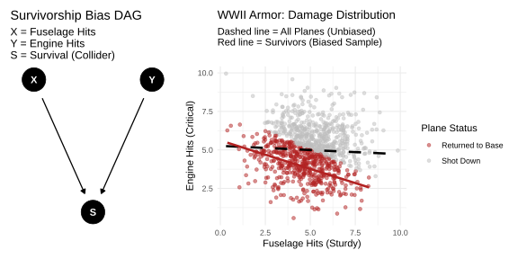
It is possible to perform an automatic test on the data to determine if the Simpson’s paradox and Berksons’s paradox might exist.
The function detect_simpsons_paradox fits a global linear model (\(y∼x\)) and records the slope sign (+ or −). It then splits the data by your designated confounder and recalculates the slopes. If any subgroup slope sign opposes the global slope sign, it flags the Simpson’s paradox.
# Detect Simpson's Paradox
# Compares global regression slope vs. stratified subgroup regression slopes
detect_simpsons_paradox <- function(data, x_var, y_var, group_var) {
message("\n--- Checking for Simpson's Paradox ---")
# Global Model
global_formula <- as.formula(paste(y_var, "~", x_var))
global_slope <- lm(global_formula, data=data) |>
tidy() |>
filter(term == x_var) |>
pull(estimate)
# Grouped Model
group_slopes <- data |>
nest_by(!!sym(group_var)) |>
mutate(model = list(lm(global_formula, data = data))) |>
summarise(
Group = !!sym(group_var),
Slope = tidy(model) |> filter(term == x_var) |> pull(estimate)
)
# Print results
print(paste("Global Linear Slope:", round(global_slope, 4)))
print("Slopes by Subgroup:")
print(group_slopes)
# Paradox Check: Do the subgroup slopes have a different sign than the global slope?
paradox_detected <- any(sign(group_slopes$Slope) != sign(global_slope))
if (paradox_detected) {
message("⚠️ SIMPSON'S PARADOX DETECTED! The global trend contradicts the subgroup trends.")
} else {
message("✅ No Simpson's Paradox detected. Trends are consistent.")
}
}The detect_berksons_paradox calculates the true baseline Pearson correlation coefficient between two variables across the entire deposit database. It then filters the dataset using your selection constraint and re-runs the correlation. If the baseline is neutral/positive but the filtered selection registers a strong negative value, it flags the selection bias.
# Detect Berkson's Paradox
# Compares correlation of the whole population vs. a conditioned subset (collider)
detect_berksons_paradox <- function(data, var1, var2, filter_var, target_condition) {
message("\n--- Checking for Berkson's Paradox ---")
# Global Correlation
global_corr <- cor(data[[var1]], data[[var2]], method="pearson")
# Filtered Data (Conditioning on the Collider)
filtered_data <- data |> filter(!!sym(filter_var) == target_condition)
filtered_corr <- cor(filtered_data[[var1]], filtered_data[[var2]], method="pearson")
# Print results
print(paste("Global Correlation (Unfiltered Dataset):", round(global_corr, 4)))
print(paste("Conditioned Correlation (Filtered Dataset):", round(filtered_corr, 4)))
# Paradox Check: If global is near-zero/positive, but conditioned is strongly negative
if (global_corr >= -0.1 && filtered_corr < -0.3) {
message("⚠️ BERKSON'S PARADOX DETECTED! Filtering data has manufactured an artificial negative correlation.")
} else {
message("✅ No Berkson's Paradox detected.")
}
}set.seed(42)
n_samples <- 1000
# Lithology A: Weathered/Porous Ore (High Iron, Low Bulk Density due to vugs/voids)
lith_A <- tibble(
Lithology = "Weathered_Ore",
Iron_Pct = rnorm(n_samples / 2, mean = 55, sd = 5),
# Within this lithology, higher Fe means slightly higher density
Bulk_Density = 2.0 + (0.02 * Iron_Pct) + rnorm(n_samples / 2, sd = 0.1),
Gold_g_t = rnorm(n_samples / 2, mean = 0.8, sd = 0.3),
Copper_Pct = rnorm(n_samples / 2, mean = 0.4, sd = 0.15)
)
# Lithology B: Fresh BIF (Lower Iron overall, but dense, tight mineral matrix)
lith_B <- tibble(
Lithology = "Fresh_BIF",
Iron_Pct = rnorm(n_samples / 2, mean = 35, sd = 5),
# Within this lithology, higher Fe also means higher density
Bulk_Density = 3.2 + (0.02 * Iron_Pct) + rnorm(n_samples / 2, sd = 0.1),
Gold_g_t = rnorm(n_samples / 2, mean = 0.7, sd = 0.3),
Copper_Pct = rnorm(n_samples / 2, mean = 0.35, sd = 0.15)
)
# Combine
deposit_df <- bind_rows(lith_A, lith_B) |>
mutate(
# Engineering Collider: Stockpile Selection Rule
# Core is sent to High-Grade stockpile if Cu > 0.6% OR Au > 1.2 g/t
In_High_Grade_Stockpile = ifelse(Copper_Pct > 0.6 | Gold_g_t > 1.2, "Yes", "No")
)
# Test 1: Density vs Iron, grouped by Lithology (Confounder)
detect_simpsons_paradox(
data = deposit_df,
x_var = "Iron_Pct",
y_var = "Bulk_Density",
group_var = "Lithology"
)
--- Checking for Simpson's Paradox ---`summarise()` has converted the output from a rowwise data frame to a grouped
data frame.
ℹ Summaries were computed rowwise.
ℹ Output is grouped by Lithology.
ℹ Use `summarise(.groups = "keep")` to silence this message.[1] "Global Linear Slope: -0.0286"
[1] "Slopes by Subgroup:"
# A tibble: 2 × 3
# Groups: Lithology [2]
Lithology Group Slope
<chr> <chr> <dbl>
1 Fresh_BIF Fresh_BIF 0.0204
2 Weathered_Ore Weathered_Ore 0.0198⚠️ SIMPSON'S PARADOX DETECTED! The global trend contradicts the subgroup trends.
--- Checking for Berkson's Paradox ---[1] "Global Correlation (Unfiltered Dataset): 0.0119"
[1] "Conditioned Correlation (Filtered Dataset): -0.6786"⚠️ BERKSON'S PARADOX DETECTED! Filtering data has manufactured an artificial negative correlation.# Quick Visual Verification
# Simpson's Visual Validation
ggplot(deposit_df, aes(x = Iron_Pct, y = Bulk_Density)) +
geom_point(aes(color = Lithology), alpha = 0.4) +
geom_smooth(method = "lm", color = "black", se = FALSE, linetype = "dashed") + # Global
geom_smooth(aes(color = Lithology), method = "lm", se = FALSE) + # Grouped
labs(title = "Simpson's Paradox Visualized", subtitle = "Dotted black line = Global, Colored lines = Per-Lithology") +
theme_minimal()`geom_smooth()` using formula = 'y ~ x'
`geom_smooth()` using formula = 'y ~ x'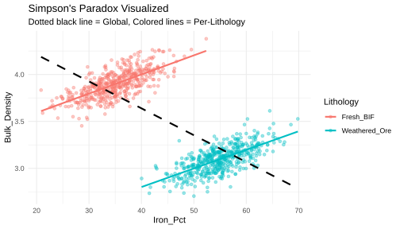
A benefit of building a DAG manually and then simulating data is to test various hypotheses and to compare the generated synthetic data against real observations. To illustrate this a truth data set is first generated using the R package simDAG. This dataset is filtered by row and column to produce a measured dataset. The measured dataset is then used to build a DAG by training a Bayesian Network. This network is then used to generate a synthetic data to replicate the measured data.
The replicated data reflects what we might think the relationships are from the data we have.
By generating a truth dataset, a measured (actual) dataset, and a replicated (synthetic) dataset we can assess the impact of including or excluding variables. As the selection bias examples illustrate, excluding important variables from the measured dataset can lead to results that differ wildly from the truth. The true data generating process is hiding latent variables waiting to wreak havoc on our analysis. This can lead us to make false assumptions and make costly mistakes based on those assumptions.
The DAG illustrated in Figure 2 is used for this example. It is treated as a probabilistic graphical model where the nodes represent variables. Different simDAG node types–‘rcategorical’, ‘rnorm’, ‘rbernoulli’, ‘gaussian’, and ‘identity’–are used for illustrative purposes.
The truth DAG (Figure 2) is used to define the structure while the parameters of the probabilistic graphical model are set arbitrarily.
dag_truth <- empty_dag() +
node("C", type="rcategorical", probs=c(0.15, 0.47, 0.38),
output="factor", labels=c("a", "b", "c")) +
node("I", type="rnorm", mean=15.0, sd=1.5) +
node("J", type="rbernoulli", p=0.5, output="logical") +
node("L", type="rnorm", mean=-1.3, sd=5.5) +
node("E", type="gaussian",
formula= ~ 2.0 + I*1.5 + Cb*-1.1 + Cc*7,
error=0.7,
parents=c("I","C")) +
node("G", type="gaussian", error=4.5,
formula=~ 3.5 + Cb*5.2 + Cc*-11.1,
parents="C") +
node("S", type="identity",
formula=~ (E + L) < 20.7,
parents=c("E","L")) +
node("M", type="gaussian",
formula=~ 1.7 + E*3.44,
error=3.7,
parents="E") +
node("D", type="gaussian",
formula= ~ 0.1 + E*15.2 + M*-2.7 + L*4.3 + G*8.6 + JTRUE*-5.68,
error=3.1,
parents=c("E","M","L","G","J")) +
node("Z", type="identity",
formula=~ ifelse(D > 1.2, TRUE, FALSE),
parents="D")
# Simulate the True Dataset
set.seed(2131)
n_samples <- 10000
df_truth <- sim_from_dag(dag_truth, n_sim=n_samples) |>
as.data.frame() |>
mutate(Source = "Truth")The results of simulating data from Figure 2 is shown in Figure 12. The plot shows the data generating DAG on the left hand side and a scatter plot of \(D\) on \(E\) where data points are coloured by the confounder variable \(C\).
x <- df_truth[order(df_truth$S), ]
# --- Plots ---
# Left: The DAG
dag_a <- dagify(
E ~ I + C,
G ~ C,
S ~ E + L,
M ~ E,
D ~ E + M + L + G + J,
Z ~ D
) |>
tidy_dagitty(layout="stress") |>
ggplot(aes(x=x, y=y, xend=xend, yend=yend)) +
geom_dag_edges_link(aes(start_cap=ggraph::circle(5,"mm"),
end_cap=ggraph::circle(5,"mm"))) +
geom_dag_point(size=9) +
geom_dag_text(size=4) +
theme_dag() +
labs(title="DAG")
# Right: Scatter plot
plot_a <- ggplot(x, aes(x=E, y=D)) +
geom_point(aes(color=C), alpha=0.5, size=0.5) +
geom_smooth(method="lm", se=FALSE, color="black", linetype="dashed", size=1.2) +
geom_smooth(aes(color=C), method="lm", se=FALSE, size=1) +
theme_minimal() +
labs(title="Scatter Plot: D ~ E",
subtitle="Dashed line = Aggregate\nColored lines = Stratified by C")
# Display side-by-side
dag_a + plot_a + plot_layout(widths=c(8, 6))`geom_smooth()` using formula = 'y ~ x'
`geom_smooth()` using formula = 'y ~ x'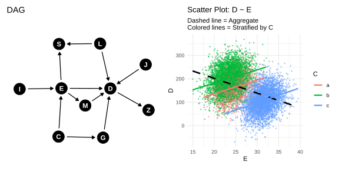
The truth dataset (df_truth) is subset by filtering rows where the variable \(S\) is true. Only the variables \(E\), \(D\), and \(Z\) are selected. The \(Z\) variable is converted from logical to a factor.
We can manually construct a DAG and specify its parameters to generate a synthetic dataset with the aim of replicating the measured data. The model parameters can be specified by trial and error or by using the base R lm function.
For more complex datasets the manual approach to constructing the DAG can be tedious, time consuming, and prone to errors. An alternative is to use the structure learning algorithms to automatically build the DAG.
The R package bnlearn contains a good selection of structure learning algorithms. The package also has functions to learn the parameters of the DAG using either a discrete network or a mixed network (discrete and continuous variables) and with or without missing values in the training data. The nodes for discrete variables contain conditional probability tables while the continuous nodes are a mixture of Gaussians. A mixed-Gaussian network can model both linear and non-linear relationships. The learned DAG model is referred to as a Bayesian Network.
Like any machine learning algorithm the Bayesian Network is prone to over-fitting and can only learn a statistical DAG where relationships model the joint conditional probability between nodes. It does not learn a causal graph. For that you need domain expertise which may lead to reversing edge directions or including latent variables and deleting edges.
Note that when learning a DAG, the bnlearn function can utilize white lists and black lists. White lists are edges that must appear in the network–these may be links that we know are to be true causal links. Black lists are edges that cannot occur in the network–these are links that physically cannot exist such as going backwards in time.
We can use the Bayesian Network to generate a synthetic dataset just like we could with simDAG. For the bnlearn package we use the function rbn().
Comparing the replicated dataset generated from the Bayesian Network against the true measured dataset shows very good agreement between the two datasets (Figure 13). Bayesian Networks can replicate data but the learned DAG is not a causal DAG and may contain edges that are physically impossible. But as a generative model Bayesian Networks can be very useful for exploring and understanding the data and for replicating the data. We could use the trained network to generate synthetic data that can be used to augment or replace the training data.
# Select common continuous variables for comparison
continuous_vars <- c("D", "E", "Z")
combined_df <- bind_rows(
df_measured |> select(all_of(continuous_vars), Source) |> mutate(Z = as.numeric(Z)),
df_replicated |> select(all_of(continuous_vars), Source) |> mutate(Z = as.numeric(Z))
) |>
pivot_longer(cols=all_of(continuous_vars), names_to="Variable", values_to="Value")
# Plot using ggplot2
ggplot(combined_df, aes(x=Value, color=Source)) +
stat_ecdf(geom="step", linewidth=1) +
facet_wrap(~ Variable, scales="free_x") +
scale_color_manual(values=c("darkorange", "royalblue")) +
labs(
title = "Empirical Cumulative Distribution Function (ECDF)",
subtitle = "Evaluating structural shifts introduced by missing features",
x="Measured Value",
y="Cumulative Probability (Fn(x))",
color="Dataset Version"
) +
theme_minimal() +
theme(
legend.position = "bottom",
strip.text=element_text(face="bold", size=11),
plot.title=element_text(face="bold", size=14)
)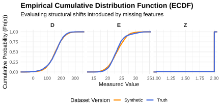
# Select common continuous variables for comparison
continuous_vars <- c("D", "E", "Z")
combined_df <- bind_rows(
df_truth |> select(all_of(continuous_vars), Source) |> mutate(Z = as.numeric(Z)),
df_replicated |> select(all_of(continuous_vars), Source) |> mutate(Z = as.numeric(Z))
) |>
pivot_longer(cols=all_of(continuous_vars), names_to="Variable", values_to="Value")
# Plot using ggplot2
ggplot(combined_df, aes(x=Value, color=Source)) +
stat_ecdf(geom="step", linewidth=1) +
facet_wrap(~ Variable, scales="free_x") +
scale_color_manual(values=c("darkorange", "royalblue")) +
labs(
title = "Empirical Cumulative Distribution Function (ECDF)",
subtitle = "Evaluating structural shifts introduced by missing features",
x="True Value",
y="Cumulative Probability (Fn(x))",
color="Dataset Version"
) +
theme_minimal() +
theme(
legend.position = "bottom",
strip.text=element_text(face="bold", size=11),
plot.title=element_text(face="bold", size=14)
)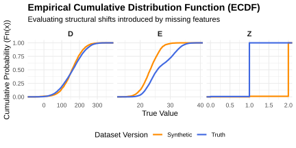
When inspecting the resulting multi-panel ECDF plots, pay close attention to the visual gap between the orange and blue step functions:
Identical Distributions (No Confounding Effects): Variables like \(A\) and \(B\) which display overlapping curves. This occurs because their distribution parameters were either independent or their structural relationships were not fundamentally altered by ignoring vital parent nodes. The model used to generate the synthetic data is sufficient to replicate the data and suggests that there are no missing (latent) variables that effect their distributions.
Divergent Distributions (Confounding Bias Introduced): Variables like \(C\), \(D\), \(E\), and \(Y\) which display pronounced horizontal offsets and differing slopes between the two curves. Because the latent variables (\(U1\), \(U2\), and \(U3\)) were active parent drivers in the true graph, dropping them forces the simulated “Replicated” system to drop multi-modal distributions, changing the distributions.
Missing variables, if they are confounders, will significantly change the interpretation of the data and any machine learning models that are generated from that data.
Comparing the true DAG with the Bayesian Network DAG trained on the measured data illustrates why machine learning does not generate causal models. Note the edges in the Bayesian Network are reversed. The edge \(D \rightarrow Z\) is now reversed \(D \leftarrow Z\). The edge \(E \rightarrow D\) is also now reversed \(E \leftarrow D\). And there is an extra link between \(Z\) and \(E\) (\(Z \rightarrow E\)).
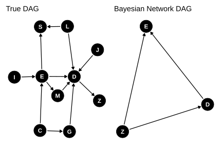
A Bayesian Network’s primary job is to factorize a massive Joint Probability Distribution into smaller, conditional pieces based on a DAG.
When you train the BN on the truth data, its structure learning algorithm (like Hill-Climbing or Tabu search) looked for a DAG that could best recreate the statistical dependencies in your dataset. However, because you removed the confounding factor variables, the BN was forced to find a DAG that could capture those missing relationships through the remaining continuous variables.
In graph theory, different DAGs can represent the exact same conditional independence relationships. These are called Markov Equivalent. For example, the BN engine cannot tell the difference between \(X \rightarrow Y\ (X\ causes Y)\) and \(X \leftarrow Y\ (Y\ causes\ X)\)
Both structures yield the exact same joint distribution P(X,Y). Because the BN only cares about maximizing the likelihood of the data, it will happily flip arrows backward or invent paths to map out the correlation left behind by your missing confounders. It successfully replicates the data because the math behind the probability factorization works, but it fails to identify the true physics of the system.
Blindly applying machine learning to geology and geometallurgy may work. But as soon as we try to apply any form of causal thinking to the resulting statistical models bad things can happen. The Simpson’s paradox and Berkson’s paradox illustrate the dangers.
Machine learning can replicate the joint conditional probabilities of the training data closely even if the statistical model is miss-specified (missing covariates). No matter what we do in trying to build a good statistical model by using techniques such as data splitting for controlling model over-fitting or under-fitting–miss-specified statistical models are still miss-specified statistical models and they are still wrong and can lead to wrong predictions, especially when predicting beyond the domain (range) of the statistical model.
In mineral resource estimation, the use of machine learning comes in handy when dealing with missing values or with dealing with highly under-sampled data such as the bulk density of rock samples. For bulk density a common approach is to simply use assays to predict density. Assays have molar mass which is directly correlated with bulk density (\(assays \rightarrow bulk\ density\)) of a rock sample.
To simplify the visual presentation of the DAG, the DAG nodes will be abbreviated.
DAG node abbreviations:
Bulk density of a rock sample can be estimated mathematically by the additive volume of its individual mineral phases. This leads to \(mineral\ assemblage \rightarrow bulk\ density\). The mineral assemblage determines the geochemical composition of the rock (\(mineral\ assemblage \rightarrow bulk\ assays\)).
The initial DAG is:
\[bulk\ density\ (Y) \leftarrow mineral\ assemblage\ (M) \rightarrow assays\ (X) \rightarrow bulk\ density\ (Y)\]
Bulk density of the rock sample is the outcome (Y), assays is the exposure (X), and the mineral assemblage is the moderator (M).
What about other geological factors that we might have observations or measurements for that may affect rock bulk density? Typical geological factors may include: lithology (discrete), alteration(discrete), oxidation (discrete), weathering (discrete), moisture content (continuous), porosity (continuous), rock hardness (continuous), rock competence (measured through RQD), texture, and spatial coordinates X, Y, and Z (continuous).
Of the available geological factors, porosity and moisture content are direct physical determinants of density (at fixed solid mineral composition). We can add the edges \(porosity\ (R1) \rightarrow Y\) and \(moisture\ (R2) \rightarrow Y\) to the DAG.
What geological factors control porosity and moisture? Porosity is controlled by the observed rock features texture, lithology (via texture) and geological processes weathering, alteration (which also affects texture), mineralisation, and oxidation. Moisture content is controlled by weathering. We now add the edges:
Lithology also directly affects mineral assemblage and texture. We need to also add the edges:
Alteration also directly affects rock texture and geochemistry via changing mineral assemblage. we need to add the edges:
The geological processes oxidation and weathering are strongly linked with oxidation affecting weathering or weathering affecting oxidation (depends on your conceptual choice).
The geological features hardness (\(R4\)) and rock competence (\(R5\)) are more symptoms than primary causes of rock bulk density. Lithology, weathering, and alteration affect rock hardness while porosity, texture and weathering all affect rock competence.
Finally, we can capture the spatial distribution of density via X, Y, and Z coordinates. These variables are freely available via geological interpretation. Both X and Y coordinates drive the rock properties while Z could be considered a direct effect as depth determines the overall mineral assemblage via lithology, alteration, weathering and oxidation states and the range limits for porosity and moisture content.
Let’s not forget about geological domains. For mineral resource estimation, geological domains are a consequence of geological three-dimensional interpretation of the data. Geological domains are considered selection variables and typically factors in lithology, mineralisation, alteration, oxidation, and grade. How the geological domains are defined determines what edges (connections) are added to the DAG.
The resultant geology DAG for predicting rock bulk density from rock geochemistry (assays) is presented in Figure 16. This graph can be simplified to Figure 17 where \(X\) is the rock geochemistry, \(Y\) is rock bulk density, \(L\) is lithology, \(G\) is a latent variable representing geological processes (weathering, alteration, mineralisation, and oxidation), \(R\) is a latent variable representing rock properties (porosity, moisture, rock texture, rock hardness, and rock competence), and \(S\) is domain.
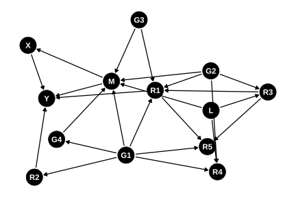
dagify(
M ~ L + G,
R ~ L + G,
X ~ M,
Y ~ X + M + R,
S ~ X + G + L,
labels = c(
M = "Mineral Assemblage",
L = "Lithology",
G = "Geological Processes",
R = "Rock Properties",
X = "Assays",
Y = "Bulk Density",
S = "Domain"
)
) |> plot_dag(layout="stress") +
geom_dag_label_repel(
aes(label=label),
segment.alpha = 1,
size = 3,
show.legend = FALSE,
box.padding = grid::unit(2, "lines"),
label.padding = grid::unit(0.2, "lines")
)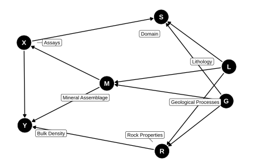
For most data sets used for training a predictive rock bulk density model, the mediators mineral assemblage and rock properties are either completely missing (most likely) or partly available for a subset of the mineral resource project area–spatial coverage is usually poor. To over come this we resort to using secondary variables (logged lithology and geological processes) that can stand in for mineral assemblage and rock properties.
If we don’t have these secondary variables and all we have is \(X\) and \(Y\), then we need to insert one or more latent variables that represent mineral assemblage, lithology, geological processes and rock properties. This might be domain or a latent variable that represents mineral assemblage, lithology, rock properties, and geological processes. The DAG can then collapse to \(S \rightarrow X \rightarrow Y \leftarrow S\). \(S\) needs to be a structural domain that is a latent cause of geology and rock properties and not a selection/estimation domain which determines how the data is carved up for modelling and spatial estimation.
How domain is treated becomes a very important consideration when trying to accurately predict density. The domain \(S\) constructed directly from the data (\(S = f(M, R, G, C)\)) using typical geological interpretation methods means that the DAG is \(S \leftarrow X \rightarrow Y \rightarrow S\). This is a selection domain. If we train a classifier to predict membership from the data (\(S^* = \text{classifier}(X, M, R, G, C)\)), then the DAG becomes \(S^* \leftarrow X \rightarrow Y \rightarrow S*\). This is a latent domain. These two “domains” are not the same (\(S \neq S^*\)). An example of \(S^*\) is using latent variable modelling or Gaussian mixture modelling to infer the latent domain classes (labels).
Not all is lost. If we have a domain (\(S\)) which is a selection variable and we want to use Bayesian Networks to model the data, we can employ the mixture‑of‑Gaussians Bayesian Network trick to reverse the links \(X,Y \rightarrow S\) to \(S \rightarrow X,Y\). The trick is similar to the examples for modelling non-linear relationships but instead a latent Gaussian variable and a selection variable are added to the DAG.
From metallurgy testwork data it is common to develop grade-recovery curves. For instance, for a gold deposit, recovery is estimated from gold head grade using a non-linear formula such as \(Y = K_1(1 - exp(-K_2*X)) + K_3log(X) + K_4\) or \(Y = \dfrac{K_1}{X} + K_2\). But this assumes that the we are interested in predicting \(Y\) given \(X\) (\(P(Y|X)\)). It implies that there is no causal relationship between \(X\) and \(Y\), only a correlation.
This approach is sufficient if we are adding predictions to a block model to be used for Resource or Reserve estimation.
It fails if we are interested in using grade as a parameter to control recovery, that is, to blend different material to give a target grade as is common practice in ore control. For this we should be using \(P(Y|do(X))\) (do calculus). The \(P(Y|do(X))\) means that we are interested in predicting \(Y\) given that we set a specific value for \(X\). The distribution \(P(Y|X)\) is not the same as \(P(Y|do(X))\). This now implies a causal relationship between \(X\) and \(Y\).
Determining true causal relationships in geometallurgy is both expensive and time consuming and requires a researchers mindset.
The simDAG R package is used to simulate a geometallurgy data set with the DAG \(X \leftarrow U \rightarrow Y\) where \(X\) is grade, \(Y\) is metal recovery, and \(U\) is the missing geological and metallurgical confounders. There is no causal relationship between \(X\) and \(Y\). The true (simulated) cause \(U\) is missing and is a representation of potentially multiple interacting factors. Using a low number of samples replicates the small size typical of geometallurgy data sets.
offsets_x <- c("1"=1.52,"2"=0.64,"3"=10.66,"4"=0.64,
"5"=0.82,"6"=22.9,"7"=1.13)
sigma_x <- c("1"=1.15,"2"=0.39,"3"=4.52,"4"=0.01,
"5"=0.63,"6"=12.57,"7"=0.81)
node_x <- function(data, parents, betas=NULL) {
m <- offsets_x[data$U]
z <- rtruncnorm(nrow(data), mean=m, sd=sigma_x[data$U], a=0.001)
return(z)
}
offsets_y <- c("1"=82.65,"2"=63.31,"3"=82.55,"4"=35.08,
"5"=48.64,"6"=91.58,"7"=73.04)
slope_y <- c("1"=0.78,"2"=0.16269347,"3"=0.02,"4"=0.01,
"5"=4.44,"6"=-0.14,"7"=0.42)
sigma_y <- c("1"=3.24,"2"=2.6,"3"=1.99,"4"=0.01,
"5"=3.24,"6"=1.9,"7"=2.88)
node_y <- function(data, parents, betas=NULL) {
m <- offsets_y[data$U] + slope_y[data$U]*data$X
z <- rtruncnorm(nrow(data), mean=m, sd=sigma_y[data$U], a=0.001)
return(z)
}
dag_geomet <- empty_dag() +
node("U", type="rcategorical", probs=c(0.64,0.07,0.02,0.01,0.02,0.01,0.23),
output="factor", labels=1:7) +
node("Z", type="rnorm", mean=0, sd=1) +
node("X", type=node_x, parents="U") +
node("Y", type=node_y, parents="U")
# Simulate the Naive Measured Dataset
set.seed(1700)
df_geomet <- sim_from_dag(dag_geomet, n_sim=100) |>
as.data.frame() |>
mutate(Source = "Measured") |>
select(X, Y)The synthesized recovery on grade is shown in Figure 18. The plot shows the measured scatter plot coloured by point density along with a non-linear equation that approximates the data (solid black line) and two boundary limits (black dashed lines). Note that even though the grade \(X\) has no relationship with \(Y\), \(X\) is being used to predict \(Y\). The correlation between \(X\) and \(Y\) is 0.33 while \(log(X)\) and \(Y\) is 0.42.
Note that this example is fabricated but the relationship between grade and metal recovery can be strongly influenced by the interaction of recovered mass, recovered metal, and grade of the concentrate. But the grade of the concentrate is a different variable from grade of the rock being fed into the process plant.
v <- densCols(df_geomet, colramp=colorRampPalette(c("black", "white")))
v <- col2rgb(v)[1,] + 1L
cols <- viridis::viridis(256, alpha=1)
cols <- cols[v]
plot(df_geomet$X, df_geomet$Y, ylim=c(0,100), col=cols, pch=16, xlim=c(0.01,15),
main="Synthesized Geomet data", xlab="Grade (g/t)", ylab="Metal Recovery (%)")
xx <- c(0.001, seq(0.01, 25, by=0.01))
yy <- 91*(1-exp(-20*xx)) + 0.9*log(xx)
lines(xx, yy, lty="dashed", col="black")
yy <- 84*(1-exp(-5*xx)) + 1*log(xx)
lines(xx, yy, lty="solid", col="black", lwd=2)
yy <- 75*(1-exp(-0.6*xx)) + 2*log(xx)
lines(xx, yy, lty="dashed", col="black")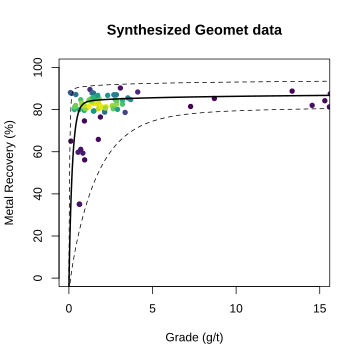
The general structure of the DAG is \(mineral\ group \rightarrow mineral \rightarrow element\).
To assist construction of the DAG in DOT notation two helper functions classify_mineral_group (classify mineral into mineral group based on anion formula) and create_mineral_dag (build the DAG) are defined.
classify_mineral_group <- function(formula) {
case_when(
# Native Minerals: single element symbol (e.g., Au, Cu, C, Ag)
str_detect(formula, "^[A-Z][a-z]?[0-9]*$") ~ "Native Minerals",
# Silicates: contains Silicon (Si)
str_detect(formula, "Si") ~ "Silicates",
# Carbonates: contains CO3
str_detect(formula, "CO3") ~ "Carbonates",
# Phosphates: contains PO4 or P with O
str_detect(formula, "PO4|P") ~ "Phosphates",
# Sulphates: contains SO4 group
str_detect(formula, "SO4") ~ "Sulphates",
# Sulphides: contains S (without SO4 group)
str_detect(formula, "S") ~ "Sulphides",
# Halides: contains Halogens (F, Cl, Br, I) without Oxygen
str_detect(formula, "F|Cl|Br|I") & !str_detect(formula, "O") ~ "Halides",
# Oxides & Hydroxides: contains Oxygen (O/OH) not captured above
str_detect(formula, "O|OH") ~ "Oxides",
TRUE ~ "Other"
)
}
create_mineral_dag <- function(data) {
pattern <- "H2O|CO3|CO2|OH|[A-Z][a-z]?"
# Clean names & classify into Mineral Groups
processed_df <- data %>%
mutate(
mineral_clean = str_replace_all(mineral, "[^a-zA-Z0-9_]", "_"),
mineral_group = classify_mineral_group(formula)
)
# Layer 1 Edges (Mineral Group -> Mineral)
group_edges <- processed_df %>%
distinct(mineral_group, mineral_clean) %>%
mutate(
group_clean = str_replace_all(mineral_group, "[^a-zA-Z0-9_]", "_"),
edge_str = paste0(" ", group_clean, " -> ", mineral_clean)
)
# Layer 2 Edges (Mineral -> Element / Polyatomic Node)
element_edges <- processed_df %>%
mutate(nodes = str_extract_all(formula, pattern)) %>%
unnest(cols = c(nodes)) %>%
distinct(mineral_clean, nodes) %>%
mutate(edge_str = paste0(" ", mineral_clean, " -> ", nodes))
# Combine Edges into DOT Notation
all_edges <- c(group_edges$edge_str, element_edges$edge_str)
dot_notation <- paste0("dag {\n", paste(all_edges, collapse = "\n"), "\n}")
# Parse into dagitty object
dag_obj <- dagitty(dot_notation)
return(list(
dot = dot_notation,
data = processed_df,
dag = dag_obj
))
}Now for an example DAG. Note that visualizing the graph can get messy very quickly as the size of the graph grows. For this small example the graph is close to being unreadable. Any bigger and the labels will start to over-plot each other and the edges (links) will be obscured or become too short to be plotted.
# Test dataset across all 8 mineral groups
df <- data.frame(
mineral = c("Quartz", "Hematite", "Calcite", "Galena",
"Gypsum", "Halite", "Apatite", "Gold", "Malachite"),
formula = c("SiO2", "Fe2O3", "CaCO3", "PbS",
"CaSO4·2H2O", "NaCl", "Ca5(PO4)3F", "Au", "Cu2(OH)2CO3")
)
result <- create_mineral_dag(df)
# Print generated DOT string
cat("=== 3-Tier DOT Notation Output ===\n")=== 3-Tier DOT Notation Output ===dag {
Silicates -> Quartz
Oxides -> Hematite
Carbonates -> Calcite
Phosphates -> Galena
Sulphates -> Gypsum
Halides -> Halite
Phosphates -> Apatite
Native_Minerals -> Gold
Carbonates -> Malachite
Quartz -> Si
Quartz -> O
Hematite -> Fe
Hematite -> O
Calcite -> Ca
Calcite -> CO3
Galena -> Pb
Galena -> S
Gypsum -> Ca
Gypsum -> S
Gypsum -> O
Gypsum -> H2O
Halite -> Na
Halite -> Cl
Apatite -> Ca
Apatite -> P
Apatite -> O
Apatite -> F
Gold -> Au
Malachite -> Cu
Malachite -> OH
Malachite -> CO3
}
==================================The resulting DAG is shown in Figure 19.
# --- Plot ---
tidy_dagitty(result$dag, layout="stress") |>
ggplot(aes(x=x, y=y, xend=xend, yend=yend)) +
geom_dag_edges_link(aes(start_cap=ggraph::circle(2,"mm"),
end_cap=ggraph::circle(2,"mm"))) +
geom_dag_label(aes(label=name),
color="black",
fill="lightblue",
size=3) +
theme_dag() +
labs(
title = "3-Tier Mineral Relationship DAG",
subtitle = "Mineral Group → Mineral Species → Chemical Node"
) +
theme(
plot.title = element_text(face = "bold", size = 14),
plot.subtitle = element_text(color = "gray30", size = 10)
)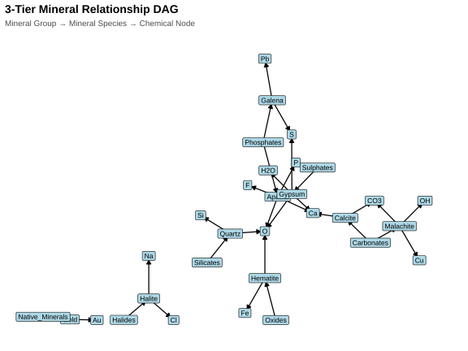
It is using them. It is how we use them. It is documenting, describing, and sharing them. It is using them for data engineering, for describing data relationships, for statistical data analysis, for simulating data, for testing hypotheses, for sequencing and scheduling, and for communicating.
For cross-disciplinary teams that rely on data analytics, they become an indispensable vehicle for communicating between team members and to stakeholders. They can limit the blast radius from cognitive bias and the semantic trap. They provide a mechanism of alignment with stakeholders, project and product managers, and team members. Without them we run the gauntlet.
DAGs are also for artificial intelligence (AI). The rapid advancement of large language models (LLMs) and smaller focused language models (SLMs) means that AI will continue to creep into the mining industry, into geology (not only exploration), and into geometallurgy. Agentic AI is quickly becoming a tool to automate almost everything. A DAG allows agentic AI to be guided by reality rather than guess. The DAG provides the structural rails on which the agentic AI can run. It prevents infinite loops, enables parallel task execution, and maps dependencies. It defines what is allowed and improves adaptability.
The challenge becomes sharing DAGs across the mining industry. The missing link (Listing 6) in applying data science to geometallurgy and geology problems is the lack of open source DAGs that describe known causal relationships.
[ Geological Models ] [ Process Metallurgy ]
"Lots of Theory" "Lots of Theory"
\ /
\ /
[ Missing Link: ]
[ Causal Graph (DAG) ]Consider this. Processing a rock to concentrate and extract an element, the same rock properties (\(G\)), under the same operational metallurgical process flow sheet and conditions (\(M\)), will always produce the same metallurgical response (\(R\)), regardless of where on Earth that rock was mined. It is fundamentally:
\[Same\ Rock\ Properties\ (G) + Same\ Operational\ Conditions\ (M) = Same\ Metallurgical\ Response\ (R)\] Or as a DAG \(G \rightarrow M \rightarrow R\).
To apply this globally, we introduce \(P\) representing project-specific adaptations that modulate how \(G\) and \(M\) interact at a specific site. By separating physical causal properties \(G\) (Geology) and \(M\) (Metallurgy) from site-specific constraints (\(P\)), we can build modular, adaptable DAGs that scale across operations.
The next challenge is also treating DAGs as products. Not diagrams, not academic artefacts, not one‑off project sketches. Products.
DAGs can become product infrastructure. They can be versioned, governed, shared, and reused. When we treat them as first‑class artefacts, with clear semantics, ownership, change‑control, and cross‑functional alignment, they become the structural rails that keep analytics, modelling, and AI grounded in reality. They prevent silent failure modes, reduce cognitive bias, and provide a stable causal backbone that scales across teams, projects, and intelligent systems.
In mining, geology, and geometallurgy, we’ve never really treated these causal structures as products. But that’s exactly what they need to be. Because once a DAG becomes part of the product stack, documented, maintained, and iterated, they transform from a helpful diagram into a shared operational truth. And that truth is what allows data science, engineering, and agentic AI to work together without collapsing under hidden bias or semantic traps.